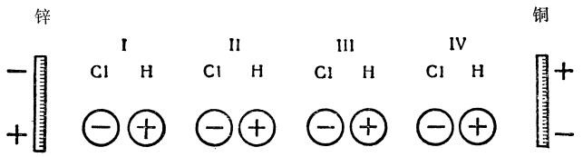

自然辩证法［论文］导言
[论文]
FN1 FN2 FN3 255 256 FN4 257 自然界绝对不变 这样一个见解。不管自然界本身是怎样产生的，只要它一旦存在，那末在它存在的时候它始终就是这样。行星及其卫星，一旦由于神秘的“第一次推动”而运动起来，它们便依照预定的椭圆轨道继续不断地旋转下去，或者无论如何也旋转到一切事物消灭为止。恒星永远固定不动地停留在自己的位置上，凭着“万有引力”而互相保持这种位置。地球亘古以来或者从它被创造的那天起（不管那一种情形）就毫无改变地总是原来的样子。现在的“五大洲”始终存在着，它们始终有同样的山岭、河谷和河流，同样的气候，同样的植物区系和动物区系，而这些植物区系和动物区系只有经过人手才发生变化或移植。植物和动物的种，一产生便永远确定下来，相同的东西总是产生相同的东西，而当林耐承认往往由杂交可能产生新种的时候，这已经是作了很大的让步了。和在时间上发展着的人类历史相反，自然界的历史被认为只是在空间中扩张。自然界的任何变化、任何发展都被否定了。开始时那样革命的自然科学，突然站在一个彻头彻尾保守的自然界面前，在这个自然界中，今天的一切都和一开始的时候一样，而且直到世界末日或万古永世，一切都将和一开始的时候一样。258 FN5 (1) 康德 的《自然通史和天体论》。关于第一次推动的问题被取消了；地球和整个太阳系表现为某种在时间的进程中逐渐生成的 东西。如果大多数自然科学家对于思维不象牛顿在“物理学，当心形而上学呵！”259 FN6 存在着 ，而是生成着 并消逝着 ——没有从其他方面得到支持，那末大多数自然科学家是否会这样快地意识到，变化着的地球竟担负着不变的有机体这样一个矛盾，那倒是可以怀疑的。地质学产生了，它不仅指出了相继形成起来和逐一重叠起来的地层，并且指出了这些地层中保存着已经死绝的动物的甲壳和骨胳，以及已经不再出现的植物的茎、叶和果实。必须下决心承认：不仅整个地球，而且地球今天的表面以及生活于其上的植物和动物，也都有时间上的历史。这种承认最初是相当勉强的。居维叶关于地球经历多次革命的理论在词句上是革命的，而在实质上是反动的。它以一系列重复的创造行动代替了单一的上帝的创造行动，使神迹成为自然界的根本的杠杆。只是赖尔才第一次把理性带进地质学中，因为他以地球的缓慢的变化这样一种渐进作用，代替了由于造物主的一时兴发所引起的突然革命(2) 260 FN7 261 笑 了以往的一切分类方法FN8 FN9 263 264 265 FN10 266 267 工具 的出现，而工具意味着人所特有的活动，意味着人对自然界进行改造的反作用，意味着生产。狭义的动物也有工具，然而这只是它们躯体的四肢，蚂蚁、蜜蜂、海狸就是这样；动物也进行生产，但是它们的生产对周围自然界的作用在自然界面前只等于零。只有人才给自然界打上自己的印记，因为他们不仅变更了植物和动物的位置，而且也改变了他们所居住的地方的面貌、气候，他们甚至还改变了植物和动物本身，使他们活动的结果只能和地球的普遍死亡一起消失。而人之所以做到这点，首先和主要地是由于手 。甚至直到现在都是人改造自然界的最强有力的工具的蒸汽机，正因为是工具，归根到底还是要依靠手。但是随着手的发展，头脑也一步一步地发展起来，首先产生了对个别实际效益的条件的意识，而后来在处境较好的民族中间，则由此产生了对制约着这些效益的自然规律的理解。随着对自然规律的知识的迅速增加，人对自然界施加反作用的手段也增加了；如果人的脑不随着手、不和手一起、不部分地借助于手相应地发展起来的话，那末单靠手是永远造不出蒸汽机来的。历史 。动物也有一部历史，即动物的起源和逐渐发展到现在这个样子的历史。但是这部历史是人替它们创造的，如果说它们自己也参预了创造，这也不是它们所知道和希望的。相反地，人离开狭义的动物愈远，就愈是有意识地自己创造自己的历史，不能预见的作用、不能控制的力量对这一历史的影响就愈小，历史的结果和预定的目的就愈加符合。但是，如果用这个尺度来衡量人类的历史，即使衡量现代最发达的民族的历史，我们就会发现：在这里，预定的目的和达到的结果之间还总是存在着非常大的出入，不能预见的作用占了优势，不能控制的力量比有计划发动的力量强得多。只要人的最重要的历史活动，使人从动物界上升到人类并构成人的其他一切活动的物质基础的历史活动，满足人的生活需要的生产，即今天的社会生产，还被不可控制的力量的无意识的作用所左右，只要人所希望的目的只是作为例外才能实现，而且往往得到恰恰相反的结果，那末上述情形是不能不如此的。我们在最先进的工业国家中已经降服了自然力，迫使它为人们服务；这样我们就无限地增加了生产，使得一个小孩在今天所生产的东西，比以前的一百个成年人所生产的还要多。而结果又怎样呢？过度劳动日益增加，群众日益贫困，每十年一次大崩溃。达尔文并不知道，当他证明经济学家们当做最高的历史成就加以颂扬的自由竞争、生存斗争是动物界 的正常状态的时候，他对人们、特别是对他的本国人作了多么辛辣的讽刺。只有一种能够有计划地生产和分配的自觉的社会生产组织，才能在社会关系方面把人从其余的动物中提升出来，正象一般生产曾经在物种关系方面把人从其余的动物中提升出来一样。历史的发展使这种社会生产组织日益成为必要，也日益成为可能。一个新的历史时期将从这种社会生产组织开始，在这个新的历史时期中，人们自身以及他们的活动的一切方面，包括自然科学在内，都将突飞猛进，使已往的一切都大大地相形见绌。268 如赛奇问道（第810页）：“或者自然界中是否存在着力量，能使死了的星系恢复到最初的炽热的星云状态，并使它再获得新的生命呢？我们不知道。”
当然，我们是不会象知道2×2＝4或物质的吸引的增加和减少取决于距离的平方那样知道这一点的。理论自然科学把自己的自然观尽可能地制成一个和谐的整体，现在甚至连最没有思想的经验主义者离开理论自然科学也不能前进一步；但是在理论自然科学中，我们往往不得不计算不完全知道的数量，而在任何时候都必须用思想的首尾一贯性去帮助还不充分的知识。现在，现代自然科学必须从哲学那里采纳运动不灭的原理；它没有这个原理就不能继续存在。但是物质的运动，不仅是粗糙的机械运动、单纯的位置移动，而且还是热和光、电压和磁压、化学的化合和分解、生命和意识。有人说，物质在其无限存在的整个时期只有唯一的一次，而且是在一个和它的永恒性比较起来只是无限短的时间内，有可能分化自己的运动，从而展开这个运动的全部丰富内容，而在此以前和以后则永远只局限于单纯的位置移动，这样说，就是主张物质是会死亡的，而运动是短暂的。运动的不灭不能仅仅从数量上去把握，而且还必须从质量上去理解；一种物质，如果它的纯粹机械的位置移动虽然也带有在适当条件下转化为热、电、化学作用、生命的可能性，但它不能够从自身产生出这些条件，那末这样的物质就丧失了运动 ；一种运动，如果它失去了使自己转变为它所应当具有的各种不同的形式的能力，那末即使它还具有潜在力，但是不再具有活动力了，因而它部分地就被消灭了。但是这两种情况都是不可想象的。FN11 本来具有的 ，从而转化的条件也必然要被物质再生产出来，即使是在千万年后多少偶然地、但是以那种也为偶然性所固有的必然性再生产出来。(3) 《反杜林论》旧序。论辩证法269 前进报 》上，而在这里汇集成书，献给读者。270 271 272 FN12 FN13 273 FN14 重量 上也各不相同，就是说，他已经按照自己的方式知道原子量和原子体积了。FN15 274 黑格尔 的著作中却有一个广博的辩证法纲要，虽然它是从完全错误的出发点发展起来的。笑 的舞蹈病。事实 出发，因而在自然科学中必须从物质的各种实在形式和运动形式出发FN16 275 276 277 (4) 神灵世界中的自然科学278 279 280 281 282 “我对这个问题感到非常有趣，并且很热心〈ardour〉地研究它。”[第119页]
他不仅使人进入催眠状态并发生四肢僵直和局部失去感觉的现象，而且也证实了加尔颅骨图283 284 笑 ，就是世界上最有魔力的催眠术家也毫无办法了。(5) “现代唯灵论中最令人惊异的现象”[第229页]。
我们只举一个例子来表明，华莱士先生对于这些奇迹在科学上的确立和证实，是处理得何等轻率。如果有人想要我们相信神灵会让人给他们照像，那末这的确是一个奢望，而且我们在承认这种神灵照片是真实的以前，当然有权利要求它们必须有十分确凿的证明。但华莱士先生在第187页上叙述道：1872年3月，主神媒古比太太（父姓为尼科尔）跟她的丈夫和小儿子在诺亭山285 “所以，在这里，两件事中必有一件
是 绝对确实的
(6) 。要不是有一个活着的、智慧的、然而肉眼看不见的存在物在这里，就是古比先生夫妇、摄影师和某一第四者筹划了一个无耻的〈wicked〉骗局，而且一直维持着这一骗局。但是我非常了解古比先生夫妇，所以我
绝对相信 ：他们象自然科学方面的任何真挚的真理探求者一样，是不能干出这种骗人的勾当来的。”
FN17 [第188页]
“无论如何，有一件事情是明白的：如果什么地方发生了骗人的勾当，那立刻就会被唯灵论者自己看破的。”[第189页]
所以，摄影师是不大可以信赖了。剩下的是古比太太，而我们的朋友华莱士对她只有“绝对的信任”，再没有别的。再没有别的吗？决不是这样。古比太太的绝对可靠是由她下面的话来证明的：1871年6月初的一个晚上，她在不省人事的状态中从汉伯里山公园她的家里，由空中被摄到兰布斯·康第特街69号——两地的直线距离是三英里——并且被放置在上述69号房子中正在举行降神会的桌子上。房门是关着的，虽然古比太太在伦敦是一个极肥胖的女人——这一点倒的确是有点意思的，但是在门上或天花板上连个小小的窟窿都没有留下就突然进到屋子里来了（1871年6月8日伦敦《回声报》287 288 “才几年的工夫，一个年青女人，弗洛伦斯·库克小姐，就显示出种种值得注意的神媒的品质，而且最近已经登峰造极，产生了一个肯定是来自神灵世界的完美的女性形体，赤着脚，披着飘洒的白袍，而这时神媒却穿着黑色的衣服，被捆缚着，沉睡在一间内室〈cabinet〉或邻室里。”[第181页]
这个神灵自称凯蒂，看起来非常象库克小姐，一天晚上，福尔克曼先生，古比太太现在的丈夫，突然把它拦腰抱住，紧紧地抱住它，看它到底是不是库克小姐的化身。这个神灵是一个十分健壮的女人，它竭力保护自己，观众们来干预，瓦斯灯被扭熄了，而乱了一阵以后，重新安静下来，屋子里点起了灯，这时神灵已经不见了，库克小姐仍然被捆住，不省人事地躺在原来的角落里。但是，据说福尔克曼先生直到现在还坚持说，他抱住的是库克小姐而不是别人。为了从科学上来确定这件事情，一个著名的电学家伐利先生，在作一次新的实验的时候，用电池的电流通到神媒库克小姐身上，使得她不切断电流就不能扮演神灵的角色。然而神灵还是出现了。所以它的确是和库克小姐不同的存在物。进一步确定这件事情便是克鲁克斯先生的任务。他第一步是要取得这位神灵小姐的信任 。 这种信任，如他自己在1874年6月5日的《灵学家》周报中所说的，“逐渐增长到这样的程度：除非
由我来布置 ，她就拒绝降神。她说她希望
我 常在她近旁，并且要在内室紧隔壁；我发现，在这种信任已经建立而且她确信我
决不致对她食言 以后，一切现象都大大加强了，用其他方法得不到的证据也如意地得到了。她常常
和我商量 出席降神会的人以及他们的席位，因为她最近由于有人不怀好意地暗示她除了其他比较科学的研究方法还要使用
武力 ，而变得非常不安〈nervous〉。”
FN18 289 “这个形体在人们看见她，摸到她，给她照像，并且和她谈话以后，就从一个小屋子里面
绝对地消失了 FN19 ，这个小屋子除了通往挤满观众的隔壁一间屋子，是没有其他出口的”[第183页]，
第二道门 通往外界的。当时也在场的克鲁克斯先生的举动，“使我对这些表演中也许有点什么东西的信心受到了最后的致命打击”（查·莫里斯·戴维斯牧师《神秘的伦敦》，伦敦丁斯莱兄弟出版社版）290 291 292 293 “这个人一生中曾替这么多的谬论作辩护，就连教皇无谬说他也真能接受了！”
294 一件一件地 揭穿，否则这些降神术士仍然有足够的活动地盘，就象华莱士关于伪造的神灵照片所明明白白地说到的一样。伪造的东西的存在，正好证明了真的东西的真实。 “我认为从证明唯灵论是真理这当中所能得到的唯一好处，就是给反对自杀提供一个新论据。与其死了借某个每举行一次降神会就赚一个基尼
FN20 的‘神媒’的嘴说一大堆废话，倒不如活着作个清道夫好些。”
295 297 “例如，水的温度最初对它的液体状态是无足轻重的；但是由于液体水的温度的增加或减少，便会达到这样的一点，在这一点上这种聚集状态就会发生变化，水就会变为蒸气或冰。”（黑格尔《全书》，《黑格尔全集》第6卷第217页）
298 299 2 O）和无水硝酸（五氧化二氮N2 O5 ）是如何的不同！前者是气体，而后者在常温下是结晶的固体。而两者在构成上的全部区别是：后者所含有的氧为前者的五倍，并且在这两者之间还有三种氮的氧化物（NO，N2 O3 ，NO2 ），它们在质的方面和前两者不同，而且彼此也不同。4 ；在这里，碳原子的四个化学键被四个氢原子所饱和。第二种是乙烷，C2 H6 ，两个碳原子互相联结，自由的六个化学键被六个氢原子所饱和。以下依据代数学的公式Cn H2ｎ＋2 ，便有C3 H8 ，C4 H10 等等，所以每增加一个CH2 ，便形成一个和以前的物体在质上不同的物体。这一系列中最低的三种是气体，已知的最高的一种十六烷，C16 H34 ，是沸点为摄氏270度的一种固体。关于从烷烃（理论上）得出的伯醇系列（公式是Cn H2n+2 O）和一元脂肪酸系列（公式为Cn H2n O2 ），情形也完全一样。在量上加上一个C3 H6 ，能够造成什么样的质的区别，可以从如下的经验看出来：我们喝可以饮用的并且不掺杂其他醇类的乙醇C2 H6 O，另一次我们喝同样的乙醇，但掺入了小量的戊醇C5 H12 O（它是大名鼎鼎的杂醇油的主要成分）。第二天早晨我们的脑袋就一定会感到这个东西，而且觉得受到它的伤害；所以甚至可以说：醉酒和由之而来的醉后头痛正是量到质的转化，一方面是乙醇，另一方面是这一点加上去的C3 H6 。4 H10 有两个同分异构体，C5 H12 有三个同分异构体；对于更高级的同系物来说，可能产生的同分异构体的数目增加得非常之快。所以，又是分子中原子的数量制约着这种在质上不同的同分异构体产生的可能性，并且就实验上所表明的而言，还制约着这些同分异构体的现实的存在。 “元素的化学性质是原子量的周期函数”（罗斯科和肖莱马《化学教程大全》第2卷第823页）
300 ，
301 302 运动的基本形式303 力 的守恒定律，另一种是更新的更确切的能量 守恒定律。在这两个定律中以后我们可以看到：一个正好和另一个相对立，而且它们中的每一个都只表现了关系的一个方面。FN21 305 306 吸引 和排斥 这一古老的两极对立。力 ”，而是被看做运动的简单形式 。可是康德早已把物质看做吸引和排斥的统一体了。至于“力”究竟是怎么一回事，我们到时候将会看到。FN22 能 ”是同一个东西。由于太阳系的收缩以及因收缩而引起的现在构成太阳系的各个天体的分离，太阳系便失去了“能”，而这一损失，按照赫尔姆霍茨的著名的计算，现在已经等于原来以排斥的形式出现的全部运动的量的453/454。纯粹 力学（这种力学所研究的，是那些具有既成的 而且在它看来是不变的聚集状态和凝聚状态的物体）的范围内，这种排斥的运动形式在自然界中是不发生的。无论是岩石从山顶上崩落下来，或者是水的下泻成为可能，形成这类现象的物理条件和化学条件，都是在这种力学的范围以外的。所以在地球上的纯粹力学中，排斥的或上升的运动一定是人工造成的，即由人力、畜力、水力、蒸汽力等等造成的。这种情形，这种用人力同天然的吸引作斗争的必要性，使力学家们产生了一种看法，认为吸引、重量、或者如他们所说的重力 ，是自然界中最重要的、基本的运动形式。举起 ，而是重力 。例如，赫尔姆霍茨就让 “我们最熟悉的和最简单的力，即重量，作为原动力而起作用……例如在一座由重锤发动的挂钟里。这个重锤……如果不把钟的全部机械发动起来，便不能和重量的牵引一致了。”但是它如果不自行落下，便不能把钟的机械发动起来，而且直到悬挂它的发条完全松了为止，它总是要不断地落下来的。“到那时，钟就停了，重锤的发动能力也暂时用尽了。重锤的重量既没有失去，也没有减少，它依旧在同一程度上被地球吸引着，可是这个重量产生运动的能力已经失去了……但是我们能够用手臂的力量把钟上起来，重锤就又升上去。这样一来，重锤又获得了它原先的发动能力，并且又能使钟走起来。”（赫尔姆霍茨《通俗讲演集》第2卷第144—145页）
因此，按照赫尔姆霍茨的意见，使钟走起来的，不是运动的主动的传送，不是重锤的举起，而是重锤的被动的重量，虽然这个重量本身，只是由于被举起来才脱离了它的被动状态，而在悬挂重锤的发条松了以后又回到被动状态。所以，如果照我们刚才所看到的新观点看来，能 仅仅是排斥 的另一种表现，那末，照赫尔姆霍茨的旧观点看来，力 是排斥的对立物吸引 的另一种表现。我们暂且把这件事确定下来。下降 运动，就是说，并不是吸引。相反地，如赫尔姆霍茨所正确地指出来的，吸引，重量，仍然和它先前一样，而确切地说，甚至变得更大了。宁可说是由于举起而传给所举起的物体的排斥，因降落而在力学上 消灭掉，并且以热的形式重新产生出来。物体的排斥变成了分子的排斥。 “这个力〈化学亲和力〉，我们可以把它想象为引 力……碳原子和氧原子间的这个引力所作的功，和地球以重量的形式对向上举起的重锤所表现的引力是一样的……当碳原子和氧原子互相冲撞而化合成碳酸气的时候，新形成的碳酸气粒子一定是处在极猛烈的分子运动中，即处在热的运动中……当碳酸气后来向周围环境放出自己的热的时候，碳酸气中的碳和氧仍然丝毫没有减少，而两者的亲和力也和以前一样强。但是这个亲和力现在只表现在它把碳原子和氧原子牢固地联系在一起，不让它们分开。”（上引书第169[—170]页）
完全和以前的一样，赫尔姆霍茨坚持说，在化学中和在力学中一样，力只存在于吸引 之中，因而是和其他物理学家叫作能并和排斥 同一的东西正好相反的东西。(7) 地球 上所发生的过程说来，把吸引还是把排斥看作运动的主动一面，即看作“力”或“能”，显然并不是完全没有关系的。相反地，在今天的地球上，吸引由于它肯定地胜过了排斥而变成完全被动的 了；一切主动的运动都必须归功于来自太阳的排斥的供给。因此，最新的学派——虽然它对运动的关系的[des Bewegungsverhältnisses]性质还不清楚——在把能看作排斥的时候，从地球上的 过程方面看来，甚至从整个太阳系方面看来，本质上是完全对的。黑格尔 那时已经处于这种质朴的发展阶段，而黑格尔已经很正确地攻击当时流行的把什么都叫做力的做法（引证一段话）309 “说磁石有
灵魂 〈如泰勒斯所说的〉，比起说它有吸引力更好些；力是一种性质，性质是
可以和物质分离的 ，可以想象为一个述语；而灵魂则是
磁石的这种运动，是和物质本性等同的 。”
FN23 （《哲学史》第1卷第208页）
310 “当我们完全了解某一自然规律的时候，我们也一定会要求它毫无例外地起作用……这样，规律在我们心目中就是一种客观力量，因此，我们把它叫作
力 。例如，我们把光的折射定律客观化，把它看作透明的东西的一种折射力；把化学亲和定律客观化，把它看做各种不同的物质间的亲和力。我们同样地说金属的电接触力，说粘合力、毛细作用力等等。这些名称把一些规律客观化了，这些规律首先只包括一小串
条件相当复杂的 FN24 自然过程……力只是作用的客观化了的规律……我们所引来的力的抽象概念，只给这一点补充了下面的思想：我们没有任意编造这种规律，它是现象的必然的规律。这样，我们
了解 自然现象即找出自然现象的
规律 的要求，就采取了另外的表现形式，即我们不得不去探究作为现象的原因的各种
力 。”（上引书第189—191页。1869年在音斯布鲁克的报告）
纯主观的 关于力 的概念，塞到一个已经确定是离开我们的主观而独立的、从而是完全客观的 自然规律中去，这无论如何是一种奇怪的“客观化”方法。这种事情最多只能由一个最正统的老年黑格尔派做出来，而不应当由赫尔姆霍茨这样的新康德主义者做出来。当我们在一个既经确定的规律中插进某种力的时候，我们既没有给这个规律，也没有给它的客观性或它的作用的客观性增加丝毫新的客观性；所增加的只是我们的主观论断 ：这个规律靠着某种暂时还完全不知道的力的帮助来起作用。但是，当赫尔姆霍茨给我们举出光的折射、化学亲和、接触电、粘合、毛细现象这些例子，并把支配这些现象的规律提高到力 这个“客观的”显贵等级的时候，这种在规律中插进某种力的做法的隐意就清楚了。 “这些名称把一些规律客观化了，这些规律首先只包括一小串条件相当复杂的 自然过程。”
正是在这里，“客观化”（宁可说是主观化）获得了某种意义：并不是因为我们完全认识了规律，而正是因为我们不 认识它，因为我们还弄不 清这些现象的“相当复杂的条件”，所以我们在这里有时找“力”这个字做避难所。这样看来，我们由此表现出来的，并不是我们关于规律的性质及其起作用的方式的科学知识，而是我们缺乏 这方面的科学知识。在这种意义下，作为还没有阐明的因果关系的略语，作为语言上的权宜之计，“力”这个字在日常的应用中是过得去的。但是超过了这一点，那就糟了。如果赫尔姆霍茨有权利用所谓光的折射力、电接触力等等来解释物理现象，那末中世纪的经院哲学家就有同样的权利用热力和冷力来解释温度的变化，从而就用不着对热这个现象作任何进一步的研究了。阻抗 。这种看法就在纯粹力学（正是在这里，所讲的只是运动的简单的转移及其在数量方面的计算）以外的许多领域中也是容许的。但是它在比较复杂的物理过程中就不够了，这是赫尔姆霍茨自己的例子所证明的。光的折射力在光本身中和在透明物体中一样多。在粘合和毛细作用这两种现象中，“力”在固体表面和在液体中肯定是一样多。关于接触电，有一点无论如何也是毫无疑问的：在这里有两种 金属起着作用；而“化学亲和力”如果包含在什么地方的话，无论如何就是包含在起着化合作用的两个 部分中。但是，由两种分开的力所构成的力，不引起反作用而本身却包含着反作用的作用，决不是地球上的力学意义下的力，而这门科学又正是真正知道“力”这个字的含义的唯一的科学。要知道，地球上的力学的基本条件，首先是不研究碰撞的原因，即每一种情况下的力的性质，其次是把力看做片面的东西，有一个在任何地方都总是和自己相等的重量和它相对抗，因而和落在地上的物体所经过的任何距离比起来，地球的半径总是被认为等于无限大。 “事实上，它只是以它的各个部分彼此间的万有引力的形式获得这方面的一笔极为巨大的妆奁。”
这是无可怀疑的。但是，这一整批重量或重力妆奁还丝毫未减地保存在现在的太阳系中，或许除去很小一部分同可能一去不复返地被投入宇宙空间中的物质一道遗失掉，这同样也是无可怀疑的。其次， “化学力也一定是已经有的，是准备起作用的；但是，因为这些力只有在各种物质最紧密地接触的时候才能起作用，所以在它们开始起作用以前，一定要发生凝缩现象”[第120页]。
如果我们象赫尔姆霍茨在前面所做的一样，把这些化学力看作亲和力，即看作吸引 ，那末我们在这里也不能不说，这些化学引力的总和是丝毫没有减少地继续存在于太阳系中。 在太阳系中“最初的机械力现在大约只有1/454还原样存在着”。
这怎么能和上面所说的相协调呢？引力，无论是万有引力或是化学引力，都是还丝毫未动地存在于太阳系中的。赫尔姆霍茨并没有指出力的其他的确实来源。的确，照赫尔姆霍茨所说，这些力已经作了巨大的功。但是这些力并没有因此而增加或减少。太阳系中的每一个分子乃至整个太阳系本身，都和前面所举例子中的钟的重锤的情形相同。“它的重量既没有失去，也没有减少。”一切化学元素都和前面说过的碳和氧的情形一样：每种元素既有的总量仍旧原样保存着，而“全部亲和力也仍然和以前一样强”。那末我们失去了什么呢？是什么样的“力”作了按照他的计算竟比太阳系现在还能作的功大453倍的巨大的功呢？到此为止，赫尔姆霍茨没有给我们任何答案。但是他又进一步说： “我们不知道，[原始星云球体中]是否还有
以热的形态存在的力的蕴藏 FN25 。”[第120页]
逆着 重量和化学吸引的方向起作用的，如果取重量和化学吸引为正，它就是负。因此，既然赫尔姆霍茨从万有吸引 和化学吸引 构成他的力的原始蕴藏，那末除此以外的热的蕴藏便不应当加到这个力的蕴藏中去，而应当从这里面减掉。否则，当太阳热逆着 地球的引力把水变成水蒸汽，并使水蒸汽向上升起的时候，太阳热就必然是在增强 地球的引力；或者水蒸汽通过的炽热的铁管所具有的热，就必然是在加强 氧和氢的化学吸引，可是它正好是使这种化学吸引不起作用。或者，以另外的形式来说明这同一个问题：假设半径为ｒ、因而体积为4 /3 πγ3 的星云球体的温度是ｔ。再假设另一质量相同的星云球体在较高的温度Ｔ之下有较大的半径Ｒ和体积4 /3 πＲ3 。显然，在第二个星云球体中，只有当它的半径从Ｒ缩小到ｒ，即它把相当于温度差Ｔ—ｔ的热放射到宇宙空间中去的时候，吸引，无论是力学的吸引或是物理的和化学的吸引，才能和第一个星云球体中的吸引起同样的作用。所以较热的星云比起较冷的星云来要凝缩得晚一些，因而从赫尔姆霍茨的观点看来，热既然妨碍凝缩，就不是正的“力的蕴藏”，而是负的。所以，当赫尔姆霍茨以为一定量的排斥 运动可以以热的形式加到吸引 形式的运动上，并增加后者的总量时，他犯了一个计算上的确定不移的错误。“由于太阳系各天体从散漫的星云物质发生假定的最初的凝缩而应当得到的热”[第134页]。
他就这样把全部“力的蕴藏”都归结为热，归结为排斥，从而使想象的“热这种力的蕴藏”可以加到“力的蕴藏”上面去。于是他的计算就表明：最初存在于气团中的全部能量（即排斥）的453/454，已经以热的形态放射到宇宙空间中，或者确切地说，现在的太阳系中的一切吸引的总和，与还存在于其中的一切排斥的总和之比，是454∶1。但是这样一来，这些计算就和用这些计算来作证明的讲演的正文正相矛盾了。运动的量度。——功311 “相反地，我一直总是看到：这个领域中的基本概念〈即“功的基本的物理概念和功的不变性”〉，对那些没有搞通数理力学的人来说，无论他们如何热心，如何有天资，甚至还有相当高度的自然科学知识，都是很难了解的。也不能否认，这是一种十分特别的抽象。甚至象伊·康德这样有才能的人也不是很容易了解它们的，这从他和莱布尼茨在这个问题上的争论可以得到证明。”
赫尔姆霍茨这样说（《通俗科学讲演集》第2卷序言）。 “把四磅重的物体举起一英尺和把一磅重的物体举起四英尺，需要同样的力；但是物体所经过的距离是和速度的平方成正比的，因为，当一个物体落下四英尺的时候，它就获得两倍于它落下一英尺时的速度。但是物体下落时获得了把物体举高到它开始下落时的高度所需要的力；所以这两种力都和速度的平方成正比。”（苏特尔《数学史》第2卷第367页）
312 313 314 “延续了四十多年，把欧洲的数学家分成了两个敌对的阵营，直到最后，达兰贝尔才用他的《动力学论》（1743年）象最后的判决书一样结束了这场无非是
毫无益处的咬文嚼字的争论 FN26 ”（苏特尔，上引书第366页）。
两方面都对也都不对；“‘活力’这个名词至今仍然保存着；
但是它已不再被用作力的量度 FN27 ，而只是一度被用来表示力学中极其重要的质量和速度平方的一半的乘积而已”[第368页]。
2 /2的另一种表现，关于这一公式，我们虽然体会到它在力学中极为重要，可是现在根本不知道它的意思究竟是什么。315 序言 里。 它说：在正文中根本没有谈整个问题，因为“它对力学来说是完全没有用处的”[第ⅩⅤⅡ页]。
这对纯粹从事计算的 力学来说是完全正确的，在纯粹从事计算的力学中，就象前面我们在苏特尔那里所看到的，文字的标记不过是代数公式的另一种表现，另一种名称，对于这些名称，最好根本不要去想它。 但是，因为有这样重要的人物研究过这个问题，所以他也愿意在序言中把这个问题简略地考察一下。人们只要头脑清楚，就会把运动物体的力仅仅了解为这些物体克服障碍或抵抗障碍的特性。所以，力既不能用mv去衡量，也不能用mv2 去衡量，而只能用障碍和这些障碍所表现的阻抗去衡量了。
但是达兰贝尔毕竟太哲学家气了，还不明白同一个力有两种量度的矛盾不是那样容易克服的。因此，他重复了本质上只是莱布尼茨已经说过的话——因为他的“平衡”和莱布尼茨的“死压力”是同一个东西，以后突然又跑到笛卡儿派方面，找到了下面这样一条出路： mv这一乘积甚至在减速运动的情况下也可以用作力的量度，“只要在这种情况下力不是用各种障碍的绝对量去量度，而是用这些障碍所产生的阻抗的总和去量度。要知道，阻抗的这个总和毫无疑义地是和动量〈mv〉成正比的，因为如大家所公认的，物体在每一瞬间所失去的动量跟阻抗和这一无限小的时间的乘积成正比，而且这些乘积的总和显然是等于阻抗的总和”。后一种计算方式在他看来是较为自然的一种，“因为一个障碍只是在它产生阻抗的时候才成其为障碍，说得恰当些，阻抗的总和就是被克服的障碍；此外，如果这样计算力，还有一个便利处，这就是在平衡和减速运动这两种情况下我们有一个共同的量度”。但是每个人都不妨各有所爱。[第ⅩⅩ—ⅩⅪ页]
因此，他相信他已经用数学上不正确的方法（这是苏特尔自己也承认的）解决了问题，接着他就以对他前辈中的思想混乱的不客气的批评来结束了他的论述，并且断定：由上述的批评看来，这只是一场毫无结果的形而上学的争论，或者甚至是一场更加没有价值的纯粹咬文嚼字的争吵。2 回到mv了。316 2 就必然要被牺牲掉，以便在数学的天国里转世投胎。2 的一座桥梁，因而具有一定的重要性，这是很正确的。2 是有效的。这种区别虽然大体上是正确的，但是在这种形式下，其逻辑意义无异于下级军官的这个著名的解决办法：在值班时总是说“对我”，在下班后总是说“使我”317 318 “一个没有旋转的、运动着的固体，其运动的量 或动量 跟它的质量和速度二者成正比。质量或速度增加一倍，动量也增加一倍。”
紧接着他们又说： “一个运动着的物体的活力 或动能 ，跟质量和速度平方二者成正比。”
他们竟这样明显地把这两个相互矛盾的运动量度并列在一起。一点也不打算解释这一矛盾，或者哪怕是把它掩饰起来。在这两个苏格兰人的著作中，思维是被禁止的，只有计算才被容许。无怪乎他们中至少有一个人——台特——是虔诚的苏格兰的最虔诚的基督徒了。319 2 这两个公式绝不是以这种形式 出现。320 2 /2来表现活力——这一点我们回头再来谈。以后他在第20页及以下各页又简略地列举出到现在为止还在应用和承认活力（即mv2 /2）守恒原理的各种情况。其中的第二项是： “只要不发生摩擦或非弹性体的碰撞，运动就可以由不能压缩的固体或流体来传递。在这些情况下，我们的一般原理通常表现为下列规则：由机械装置所传递和改变的运动，在力的强度方面的减少同速度方面的增加总是按同一比例的。因此，如果我们设想重量m借助于一架机器（这架机器凭着某种过程而等速地产生作功的力）以速度c向上升，那末重量nm可以借助另一架机械装置向上升，可是速度只是c/n，因而在两种情况下，机器在一个单位时间内所产生的张力的量，都可以用mgc来代表，其中ｇ表示重力的强度。”[第21页]
这样，这里又是一个矛盾：简单地和速度成正比而增减的 “力的强度”，不得不用来作为和速度平方成正比而增减的力的强度守恒的证明。2 /2是用来规定两种完全不同的过程的，但是这一点我们老早就已经知道，因为mv2 不能等于mv，除非v＝1。必须弄清楚为什么运动会有两种量度，这件事情在自然科学中就如同在商业中一样是决不允许的。因此，我们再用另外的办法来试一试。2 也一样可以应用。我们且研究一下这样一个机械装置，在这个装置中，两边的杠杆臂的比是4∶1，因而在这个装置中1公斤的重量可以同4公斤的重量保持平衡。所以，我们在一个杠杆臂上加极其微不足道的力，可以使1公斤上升20米；如果把同样的力加在另一个杠杆臂上，那末就可以使4公斤上升5米，而且这个较重的重量下降所经过的时间和另一个重量上升所需要的时间是一样的。质量和速度互为反比：mv，1×20＝m′v′，4×5。另一方面，如果我们让每一个重量在升起来以后又自由落到原来的水平面，那末1公斤的重量在落下20米的距离以后所得到的速度是20米（在这里，由重量引起的加速度用一个整数10米，而不用9．81米）；另一个4公斤的重量在落下5米的距离以后所得到的速度是10米321 2 ＝1×20×20＝400＝m′v′2 ＝4×10×10＝400．2 表现为已经消失了的机械运动的量度。2 的总和在碰撞前后都是不变的。两个量度具有同样的效力。以前 的mv2 的总和减去碰撞以后的mv2 的总和，结果无论如何都有一个正的余数。这个总量（或它的一半，这随所采取的观点而定）就是因各个碰撞物体互相侵入和变形而减少的活力。——这后一情形现在是清楚明白的。前一论断，即mv的总和在碰撞前后一样，却不是如此。和苏特尔的意见相反，活力是运动，如果它有一部分丧失掉，那末运动也就丧失了。因此，不是mv在这里不正确地表示了运动的量，就是上述的论断是错误的。整个定理就是这样一个时代的遗产，在这个时代，关于运动转化的观念还一点也没有，因而只是在别无其他出路的时候才承认机械运动的消失。所以mv的总和在碰撞前后的相等，是由这一总和既没有丝毫损失也没有丝毫增加来证明的。但是，既然物体由于和自己的没有弹性相适应的内部摩擦而在活力上有所损失，所以它们在速度上也有所损失，而mv的总和在碰撞后就一定比碰撞前小了。既然在计算mv2 时，内部摩擦的重要性表现得这样明显，那末在计算mv时就决不能把它略去。2 在这里就发生了冲突，其所以如此，是因为有一定数量的机械运动真正消失了。计算本身就表明：mv2 的总和正确地表现了运动的量，而mv的总和却不正确地表现运动的量。2 的几种情形。2 成正比的一定的动量。如果一列火车碰到另一列停着的火车，那末碰撞的激烈程度和相应的破坏性，是和这一列火车的mv2 成正比的。同样，在计算克服某一阻抗所需要的机械力时，也是要用mv2 的。2 /2来量度。那末把重物举起来的时候的情形是怎样的呢？机械运动或机械力这样的东西消失了。但是它并没有化为乌有：用赫尔姆霍茨的话说，它是变成了机械张力；用现代人的话说，是变成了位能；用克劳胥斯的话说，是变成了埃尔加勒（Ergal），而且在任何时候都可以用任何机械上允许的方法把它重新变成同产生它所必需的机械运动等量的机械运动。位能不过是活力的反面表现，而活力也不过是位能的反面表现。2 /2，即等于12×400×400×＝960000公斤米（因为24磅＝12公斤FN28 322 323 2 去量度。2 /2是以机械运动转化为一定量的其他形式的运动的能力来量度的机械运动。我们已经看到，这两种量度因为互不相同，所以并不互相矛盾。作了功 ，而且确实是这样多的功。324 “静止是运动的特殊情形”，
而这就证明：他不仅能计算，而且也能辩证地思维。 “尽可能地把功的基本的物理概念及其不变性弄清楚”[序言第Ⅵ页]。
我们在那里所学到的关于功的一切就是：功是可以用呎－磅或热量单位来表示的东西，而这些呎－磅或热量单位的数目对于一定量的功来说是不变的；其次，除机械力和热外，化学力和电力也能作功，但是所有这些力都是按它们实际作功的比例耗尽它们的作功能力的。由此可以作出结论：整个自然界中一切能起作用的力的量的总和，无论自然界中发生什么样的变化，总是永远不变，始终一样。功这一概念没有得到发展，甚至还没有被确定(8) “摩擦和非弹性体的碰撞是
机械功消灭 FN29 而热代之产生的过程。”（《通俗讲演集》第2卷第166页）
消灭 ，在这里是作了 机械功。机械运动表面上 消灭了。但是，机械运动如果不在表面上消灭掉，如果不变成另一形式的运动，它就无论如何连百万分之一公斤米的功也不能 作出来。2 来量度的。可是在这里发生了一个新的矛盾。我们且听听赫尔姆霍茨说的吧（《力的守恒》第9页）。他说：功的大小可以用升到ｈ高的重量m来表示；然后，如果用ｇ来表示重力，功的大小就等于mgh。物体要自由地垂直上升到ｈ这一高度，就需要速度υ＝2 /2。而赫尔姆霍茨主张 “以mv2 /2这个量来表示活力的量，这样一来，它就变得和功的大小的量度一样了。从活力这个概念一向的用法看来……这一改变是没有意义的，但是它在将来会给我们非常重要的益处”。
这是难于置信的。赫尔姆霍茨在1847年还这样弄不清活力和功的相互关系，以致完全没有觉察到，他是怎样把活力的先前的比例量度变为它的绝对量度；而且完全没有意识到，他由于自己的大胆的处理而作了多么重要的发现，他仅仅考虑到方便，就推荐mv2 /2来代替mv2 ！力学家们也是为了方便的缘故才采用了mv2 /2。mv2 /2也只是逐渐地在数学上得到了证明：诺曼（《普通化学》第7页326 327 2 /2卓越的代数上的证明。可是这并没有阻止我们的两位苏格兰人汤姆生和台特这样说（上引书第163页）： “一个运动着的物体的
活力 或动能跟它的质量和速度平方二者成正比。如果我们采用和前面一样的质量单位[和速度单位]〈即以单位速度运动着的质量的单位〉，那末用质量和速度平方的乘积的
一半 来给活力下定义，是
特别有利 FN30 的。”
2 /2可以量度功，那末活力也一定可以用mv2 /2来量度。但这是科学上发生的情形。理论力学得出了活力这一概念，工程师的应用力学得出了功这一概念，并强迫理论家接受它。理论家们埋头于计算，变得非常不习惯于思维，以致多年来都没有认识到二者的相互联系，他们用mv2 量度其中的一个，用mv2 /2量度另一个，最后才采用mv2 /2作为二者的量度，但这不是因为有了理解，而是为了计算起来简单！(9) 潮汐摩擦。康德和汤姆生—台特
地球的自转和月球的吸引328
汤姆生和台特《自然哲学论》第1卷329
“在一切象地球一样有一部分自由表面被液体复盖着的天体上，由于阻碍着潮汐运动的摩擦，也都有间接的阻抗
330 。这些阻抗在这些天体和邻近的天体相对地运动着的时间内，总是要从它们的相对运动中吸取能量。所以，如果我们首先考察月球单独对地球及其河、湖、海洋的作用，我们就会看到这个作用必然趋向于使地球绕自己的轴而旋转的周期和这两个天体绕它们的惯性中心而旋转的周期相等；因为在这两个周期不相同的时候，地球表面的潮汐作用总是要从它们的运动中吸取能量。为了比较详细地考察一下这个问题，同时避免不必要的复杂化起见，我们假设月球是一个匀称的球体。月球质量和地球质量之间的引力的相互作用和反作用，将相当于一个沿着通过月球中心的一条直线起作用的单独的力，而且这个力
一定要阻碍地球的自转，直到这个自转在比月球绕地球的运动为短的周期内完成时为止 FN31 。因此，它一定沿着象MＱ这条线起作用，因而偏离地心ＯＱ这样一段距离；这个偏离在图中当然是大大扩大了的。现在，沿直线MＱ实际作用于月球的力可以认为是由两个力组成的，一个是沿直线MＯ向着地心起作用、大小和整个力差不多相等的力，一个是比较很小而沿着垂直于MＯ的直线MＴ起作用的力。后一个力极接近于和月球的轨道相切，而方向和月球的运动方向
相同 。这个力如果突然开始起作用，那末它首先会使月球的速度增加；但是过一个时候月球就会由于这个加速度而离开地球很远，结果它（由于它是抵抗着地球的吸引而运动的）就会失去它从产生加速度的切线力所得来的速度。在运动的方向上起作用、但小得每一瞬间都只能和轨道的圆形稍有偏斜的切线力，其连续不断的作用一定会逐渐增大卫星和中心天体的距离，并使失去的运动的动能重新作出它自己抵抗中心天体的吸引所作的功。如果想象这个环绕中心天体的运动是沿着慢慢向外展开的螺旋形轨道进行的，这些事情就容易理解了。假设力和距离的平方成反比，那末重力的那个反运动方向的切线分力，将是顺运动方向的起干扰作用的切线力的两倍，因此，抵抗着前者所作的功的一半是后者作的，而另一半是从运动吸取来的动能作的。我们现在所考察的特殊的起干扰作用的原因对月球运动所起的全部作用，很容易由动量矩原理求出。所以我们看到，在任何时候由地球和月球的惯性中心相对于它们共同的惯性中心而运动所得到的动量矩，等于地球绕自己的轴自转而损失的动量矩。象现在这样运动着的月球和地球的惯性中心的动量矩之和，约为地球自转的现在的动量矩的4．45倍。前一个运动的平均平面是黄道面，所以两个动量的轴互成23°27．5′的平均角度，如果略去太阳对月球运动的平面的影响，这个角度就可以看作两个轴现在的实际的倾角。因此，合成的、或总的动量矩5．38倍于现在的地球自转的动量矩，而它的轴和地轴成19°13′的角度。所以
潮汐 FN32 的最终倾向是使地球和月球以这个合成的动量矩绕着这个合成的轴作简单的等速转动，就好象它们是一个刚体的两部分一样：在这种条件下，月球和地球间的距离会（大约）按1∶1．46的比例（即两个惯性中心现在的动量矩的平方和总的动量矩的平方之比）而加大，而公转的周期则按1∶1．77的比例（即这两个动量矩的立方之比）而加大。因此，距离会增大到347100英里，而周期会延长到48．36天。假若宇宙中除了地球和月球就没有其他的天体，那末这两个天体就会按照圆形的轨道绕着它们共同的惯性中心永远这样运动下去，而地球则以同样的周期绕着自己的轴旋转，总是以同一面向着月球，因而地球表面的全部液体都将和它的固体部分处于相对的静止状态。但是由于有太阳存在，这种状况是不能永久保持的。在地球上一定会发生太阳潮——在地球相对于太阳而旋转的一个周期中有两次潮涨和两次潮落（这就是说，在一个太阳日内有两次，或者在一月内也是同样的情形）。这种情形要是
不因液体的摩擦而失去能量 FN33 是不可能继续下去的。在地球和月球的运动中由这种原因所造成的整个干扰过程，是不容易弄清楚的，但是它的最终结果，必然是地球、月球和太阳开始象
一个 刚体的各部分一样绕着它们的共同的惯性中心旋转。”
“那时它的〈地球的〉表面和月球处于相对的静止之中，即它开始以和月球绕地球旋转的周期相同的周期绕自己的轴旋转，因而总是以同一面向着月球”
331 。
“假若地球完全是固体，它上面一点液体也没有，那末无论是太阳的吸引或是月球的吸引，都不能使它绕自己的轴而作的自由旋转发生变化，因为这种吸引对地球的东部和西部的作用是相同的，从而无论在哪一面都不能引起丝毫的偏斜；所以，它一点也不妨碍地球继续自由地自转，就好象没有受到任何外面的影响一样。”
332 可以看见的 一面。真正失去了 。它只有在它从热的形式反过来转化 为动能时，才能重新成为动力学上有效的东西。固体 的那一部分可以完全作为动力学上的位能重新出现，因而由月球的距离的相应扩大所补偿。而作用于地球的液体的那一部分，只有在它不使这些液体以反地球自转的方向运动时，才可能这样，因为这种运动总是完全 转化为热，并由于放射出去而对这个系统说来是最终失去了。完全的刚体 ，绝不可能有潮汐，因而也绝不可能有潮汐摩擦。作为机械运动 而消失的。它决不能立即自行恢复原状。这个过程不是直接地可逆的。这种运动转化为性质不同的各种运动形式，转化为热，转化为电——转化为分子运动的形式。FN34 “物体内部的以太也能够参与……有重量的原子〈最好是说分子〉的运动”（《热之唯动说》第1卷第22页）。
但是，在电和热这些现象中必须首先考察的，又是分子运动；而且也不能不是这样，因为我们关于以太的知识是太少了。但是，如果我们进步到能建立以太力学，这种力学自然就会把现在不得不归到物理学中的许多东西包括进去。334 335 336 错误理论 。同时，这种错误理论并不是什么奸险的哲学强迫物理学家接受的，而是物理学家用他们自己的似乎比形而上学的哲学思维方式强得多的自然主义思维方式穿凿附会出来的。 “一种特殊的
运动 FN35 ，其性质从来没有得到圆满的解释”。
337 电
(10) “电花是放电，或者说，就是许多带电粒子的极化感应状态因这些粒子中少数占有极小极有限空间的粒子的特殊作用而减弱。法拉第认为，发生放电现象的这少许粒子，不仅互相排斥，而且暂时还有一种特殊的、十分活跃的〈highly exalted〉状态；就是说，它们周围的所有的力都依次集中于它们，从而它们就进入一种强度也许和原子进行化学化合时的强度相当的状态；然后它们又以我们现在还不知道的某种方法把这种力放出来，就象原子放出自己的力一样，整个过程就这样结束了〈and so the end of the whole〉。这个最后的作用，正象以金属粒子代替放电的粒子时所看到的一样，而且要证明作用的原理在这两种场合下相同，也似乎不是不可能的。”
340 汤姆生又说：“我之所以用法拉第自己的话来叙述他的这个解释，是因为我对这个解释还不完全了解。”
“带电的物体的特殊物质性还没有进到过程中，只是初步地和在精神上已经在过程中确定下来”，而且电是“物体固有的愤怒、固有的暴怒”，是“任何物体在被激怒的时候都会表现出来的”“愤怒的自我”（《自然哲学》第324节附释）
341 。
电的单位和毫克的比值 ”FN36 “如果在韦伯所假定的以相反的方向流动而电量为±1/2+ｅ的两个电流上，再加上一个使±1/2+ｅ这一电量以阳电流的方向流动而对外部不起作用的
中性电流 FN37 ，那末这个假说就可以和韦伯的假说结合起来了。”（第3册第577页）
342 什么 是电运动的真正物质基础，什么 东西的运动引起电现象。一个 不可否认的成就。大家知道，至少有这样的一个点存在着，在这一个点上，电直接改变光的运动：它使后者的极化面回转。克拉克·麦克斯韦根据他的前面说过的理论，计算出一个物体的比电媒容量等于它的折光率的平方。波尔茨曼研究了各种非导体的介质常数，发现硫磺、松香和石蜡的介质常数的平方根分别等于其折光率。最高的误差——在硫磺中——仅百分之四。这样一来，麦克斯韦的以太说就在实验上被证实了。直接 产生（由摩擦）静电，只有耗费了很大的能量，才能产生恒值电流；要使这种运动至少大部分变成电的运动，那就需要磁来做媒介，正如同在格兰姆、西门子等人的著名的磁电机中所发生的情形一样。热可以直接变成电流，就如同在两种不同金属的焊接处所发生的情形一样。由化学作用释放出来的能量，在通常的环境中是以热的形式出现的，但在一定的条件下就变成电的运动。反之，电的运动，一有所需要的条件，也可以变成任何其他形式的运动：可以变成物体运动（规模很小的，直接变成电动力学的吸引和排斥；规模很大的，重新以磁为媒介，在电磁发动机中进行）；可以变成热（只要没有其他变化发生，通过一个封闭电路就行了）；可以变成化学能（在电解槽和伏特计中接通电路，电流在其中就可以分解用其他方法所不能分解的化合物）。 “依据力的守恒定律，以任何方式用来产生电流的[机械]功，必定等于用来产生各种电流作用的功”[第3册第472页]。
物体运动或热的转变为电(11) 343 344 电的分离力 ”，它和电动力成正比，所以它对于一定的电池就代表一定量的能。照传统的观点看来是电池本身所固有的、即使没有化学作用发生也具有的能量来源，即电的分离力，和由化学作用释放出来的能量间的关系是怎样的呢？如果它是离开化学作用而独立存在的能量来源，那末它提供的能量又是从什么地方得来的呢？以前 就已经互相发生化学作用的时候，电流才能形成。维德曼曾把这种更旧的化学说总括如下（第1册第784页）：照这种理论说来，所谓接触电， “只有在相接触的物体间同时发生实际的化学作用，或者在化学平衡被破坏（即使不直接和化学过程相联系），在相接触的物体间发生‘化学作用的倾向’的时候，才有可能出现”。
我们可以看出，双方都只是间接地提出电流的能量来源的问题，这在当时也几乎是别无他法的。伏特及其后继者认为下面这件事情是十分自然的，这就是：不同的物体一接触，就会产生恒值电流，所以并不需要补偿就能作一定的功。利特尔及其追随者就一点也不明白，化学作用如何能使电池产生电流和作功。但是对化学说来说，这一点早就由焦耳、法夫尔、劳尔等人阐明了，而接触说的情况却刚刚相反。它固执得这样厉害，以至它在本质上还停留在它原来的出发点上。所以，在今天的电学中，还存在着老早过去了的时代的观念（那时人们不能不满足于把任何作用都归之于随便抓到的、浮现于表面的、似是而非的原因，不管运动是否能无中生有）——和能量守恒原理直接矛盾的观念。而且即使把这些观念的最糟糕的方面加以删除、削弱、冲淡、削减、美化，事情也不会有所改善：混乱只会更加严重。 “虽然不发生化学反应的各种物体（例如金属）的接触作用，
既不是电堆的理论所必不可少的 FN38 （以前人们是这样想的），也不能因
欧姆 从这个假设引出自己的定律（没有这个假设这个定律也可以引出来）而且以实验证实过这个定律的
费希纳 也替接触说辩护而得到证明，但是
金属 FN39 接触即产生电，也是不可否认的，至少照现有的几个实验看来是如此，即使所得到的结果由于不可能使互相接触的物体的表面绝对保持清洁，而在数量方面可能总是不可避免地不可靠的。”
金属 的接触！ “
大致象下面这样 来考虑：如果使两块不同的金属板Ａ和Ｂ互相接近到只保持一个非常小的距离，它们因附着力的作用就开始互相吸引。它们一互相接触，就失去了这种吸引所给予它们的运动的活力。（如果我们假设金属的分子是在不断地振动着，那末也
可能 发生这样的情形：如果不同的金属一接触，不同时振动的分子也互相接触，那末分子的振动就会在失去活力的情况下发生变化。）失去的活力
大部分 都变成热。而其中的一
小部分 就消耗在以另外的方式分配接触前所没有分开的电上。我们在前面已经说过，
可能 是由于两种电的吸引不同，这两个碰在一起的物体就带上了等量的阳电和阴电。”
FN40 大 部分都变成了热，只有一小 部分是用来引起电的分离力。虽然大家都知道，自然界中有不少由极小的冲量产生极强的作用的实例，然而看来就是维德曼自己也感觉到，他那一点点能量来源在这里是很不够的，他只好假设两种金属在其接触面上的分子振动相互干涉，以寻求第二个可能的来源。撇开我们在这里所碰到的其他种种困难不谈，格罗夫和加西奥都证明了，根本不需要真正的接触就可以发电，正如维德曼自己在前一页上所告诉我们的一样。总之，我们对产生电的分离力的能量的来源观察得愈多，这个来源就愈是缩小到什么也没有了。 “所以在属于电压序列的各种物体所构成的封闭电路中，要形成恒值电流是不可能的。”[第1册第45页]
维德曼还以下面这种理论上的考虑来进一步支持这个命题： “事实上，如果恒值电流在电路中出现，它就会在金属导体本身中产生热，这种热顶多只是为金属接触处的冷所消灭了。在任何情况下，都会产生热的不均衡的分布；而且一部电磁发动机要是不从外面供给能量，而由电流不断地发动并因而作功，这是不可能的，因为在（例如用焊接法）使金属很牢固地连接起来的时候，在接触处是不能发生足以补偿这个功的任何变化的。”[第1册第44—45页]
但是，维德曼并不满足于金属的接触电不能单独产生电流这一事实的理论上的和实验上的证明：我们将看到，他还认为必须提出一个特殊的假说，以抹煞接触电的效能，即使是在接触电或许在电流中有些作用的地方。 “把例如锌棒和铜棒这样两种金属的一端焊接在一起，而以第三种物体把这两种金属棒空着的一端联接起来，这一物体要对两种金属都没有 起电作用，而仅仅能传导聚集于金属表面的两种相反的电，这就使得这两种电在它里面互相中和。于是电的分离力就不断地恢复先前的电位差，从而在电路中就产生一个无需任何补偿就能作功的恒值电流，这又是不可能的。因此，只能导电而对其他物体无起电作用的物体是不可能有的。”[第1册第45页]
我们并没有比以前走得更远一点：运动不可能创造出来这一事实又堵住了我们的道路。凭着没有化学反应的物体的接触，即凭着本来意义的接触电，我们是永远不能产生出电流来的。因此，我们就再转回来，试试维德曼给我们指出的第三条道路吧： “最后，如果我们把一块锌板和一块铜板浸入含有所谓
二元 化合物的液体中，这化合物因而就能分解为化学性质不相同的完全互相饱和的两种成分，例如，浸入稀盐酸（H＋Cl）等等中，这时，照第27节中的说法，锌就带阴电而铜就带阳电。如果把这两种金属联结起来，这两种电就通过接触的地方而等化，
于是阳电流 通过这个地方由铜流到锌。而且，因为在这两种金属接触时出现的电的分离力使阳电
按同一方向移动 ，所以电的分离力的作用
并没有 互相消灭，就象在仅仅由金属构成的封闭电路中一样。
因此，这里产生了一个阳电恒值电流 ，这个电流在封闭电路中通过铜和锌的联结处由铜流到锌，再通过液体由锌流到铜。我们很快（第34节及以下各节）还要回到这样一个问题上来：存在于封闭电路中的各个电的分离力，在形成电流方面
实际上 起了多少作用。——产生这种‘电流’的导体组合，我们称之为伽法尼电池，或者也叫作伽法尼电池组。”
FN41 （第1册第45页）
二元 化合物的液体中，于是，照第27节中所说的，锌就带阴电，而铜就带阳电。但是在整个第27节中没有一个字提到二元化合物。那里只谈到在一块锌板和一块铜板间隔以一块浸过酸性 溶液的绒布所构成的简单的伏特电池，然后就研究由此引起的两种金属上的静电荷，根本没有提到任何化学过程。因此，所谓二元 化合物在这里是从后门偷运进来的。能 分解为化学性质不相同的完全互相饱和的两种成分”（在它们已经分解后，完全互相饱和？！）这一情况，最多也只是在它真正分解的时候 ，才能教给我们一点新东西。但是，关于这一点他一个字也没有告诉我们，所以我们暂时还不得不假设它是不 分解的，例如烷烃。阳 电流通过这个地方由铜流到锌”。为什么只有“阳”电流按这一个方向流动，却没有“阴”电流按相反的方向流动呢，我们又不知道了。直到现在还被认为是和阳电一样必要的阴电究竟变成了什么呢，我们根本不知道；而电的分离力的作用正好是在于使这两种电自由地互相反对。现在阴电却突然被压下去，好象被隐藏起来了，这就显得似乎只有阳电存在了。两种电合 FN42 4．“而且，
因为 在这两种金属接触时出现的电的分离力使阳电
按同一方向移动 ，所以电的分离力的作用并没有互相消灭，就象在仅仅由金属构成的封闭电路中一样。
因此 ，这里产生了一个恒值电流”
FN43 ，等等。
在“形成恒值电流的时候……在金属接触处的电的分离力……
必定是不起作用的 FN44 ”；
5．“因此，这里产生了一个阳电恒值电流 ，这个电流在封闭电路中通过铜和锌的联结处由铜流到锌，再通过液体由锌流到铜。”
但是，要使这种恒值电流“在导体本身中产生热”，并且能够由它把“一部电磁发动机发动起来并因而作功”，不供给能量是不可能的。究竟这种能量的供给是否可能，它从什么地方得来，维德曼直到现在也没有向我们暗示过半个字，所以恒值电流还是和在前面研究过的两种情况一样，是不可能的东西。 “我们现在应当来研究一下，电的分离力在一个由两种金属和一种液体，例如由锌、铜和盐酸所构成的封闭电路中，是如何起作用的。
我们知道 ，当电流通过液体的时候，其中所含的二元化合物（HCl）的成分就这样分开来了：一种成分（H）在铜上
游离出来 ，另一种等价的成分（Cl）在锌上
游离出来，同时 ，后一成分就和等价的锌化合成ZnCl。”
FN45 我们知道 ！如果我们知道这一点，那末我们肯定不是从维德曼那里知道的；我们看到，关于这一过程他一直连半个字也没有向我们暗示过。加之，如果 关于这一过程我们知道一点什么，那就是它不会象维德曼所描写的那样。345 2 ）放出97210热量单位，而2（H，Cl）则放出44000热量单位（尤·汤姆森）。这样，电池中的过程就可以说明了。所以事情并不象维德曼所说的那样，氢是直截了当地在铜上游离出来，而氯是在锌上游离出来，“同时”，锌和氯随即就偶然地化合起来了。相反地，锌和氯的化合是整个过程的最重要的基本条件，而且这个化合过程如果不发生，我们就别想铜上会有氢游离出来。2 时所放出来的能量，多过两个H原子从两分子的HCl中游离出来时所耗费的能量，这一多余的能量就在电池中转化为电的运动，并且产生了出现于电路中的整个“电动力”。所以并不是什么神秘的“电的分离力”无需已经指出的能量来源就使氢和氯互相分开，而是电池中所发生的整个化学过程为电路中的一切“电的分离力”和“电动力”提供它们保持存在所必需的能量。第二种 解释和他的第一种解释一样，对我们是没有什么帮助的，现在我们进一步考察一下他所写的本文吧： “这一过程证明，二元化合物在两种金属间的作用，不仅仅在于它的全部质量对某一种电的简单的占优势的吸引，就象在金属那里的情况一样，而且在这里还呈现出它的两种成分的一种特殊作用。因为Cl这一成分在阳电流进入液体的地方放出来，而H这一成分在阴电流进入液体的地方放出来，所以
我们就假定 ：HCl这一化合物中的每一个当量的氯都带有一定量的阴电，而后者即制约着进来的阳电对氯的吸引。这是化合物的
带阴电的成分 FN46 。同样，每一当量的H都一定带有阳电，所以是化合物的带阳电的成分。这些电荷在H和Cl化合时
可能 产生，正如同锌和铜接触时的情形一样。因为HCl这一化合物自身是不带电的，所以
我们必须 依据这一情形
假设 ：其中带阳电的成分的原子和带阴电的成分的原子含有等量的阳电和阴电。
现在如果把一块锌板和一块铜板浸入稀盐酸中，
我们就可以推测 ，锌对带阴电的成分（Cl）的吸引让对带阳电的成分（H）的吸引要强些。因此，盐酸中的和锌接触的分子
一定 是这样配置的：它们的带阴电的成分趋向锌，而带阳电的成分趋向铜。因为这样排列起来的成分都以它们自己的电吸引作用于后面的HCl分子，所以锌板和铜板间的分子的整个序列就排列成这样：

如果第二种金属对带阳电的氢的作用也象锌对带阴电的氯的作用一样，那末这就更加促成了这样的配置。如果它的作用方向刚好相反，但是比较微弱，那末至少这个配置的方向是不会改变的。
由于靠近锌的带阴电成分Cl所具有的阴电的感应作用，电就
会 这样分布于锌：锌板上和最近的盐酸原子
346 的Cl贴近的地方带阳电，而离得较远的地方就带阴电。同样，铜板上阴电聚集在和附近的盐酸原子的带阳电成分（H）最接近的地方，而阳电则被推到较远的地方。
其次 ，锌上面的阳电就
会 和最近的Cl原子上所带的阴电结合起来，而Cl原子本身就
会 和锌化合，[形成不带电的ZnCl]。先前和这个Cl原子化合在一起的带阳电的H原子，就
会 和趋向于它的第二个HCl原子中的Cl原子化合起来，同时这些原子中所合的电也互相结合起来了；同样，第二个HCl原子中的H原子和第三个HCl原子中的Cl原子
会化合起来 ，如此类推，直到最后，H原子就
会 在铜上游离出来，而它所带的阳电就和分布在铜上的阴电结合起来，因而它就在不带电的状态中发散了。”这个过程会“返复不断地继续下去，直到聚集在金属板上的电对于趋向它们的盐酸成分所带的电的排斥和金属对这些成分的化学吸引二者相互平衡时为止。但是，如果用一个导体把两块金属板连结起来，那末金属板上的游离电就互相结合，而且上述的过程又会重新开始发生。
这样 ，一个恒值电流就产生了。——显然，因为移向金属的二元化合物的两个成分以一定的速度向金属运动，然后达于静止状态，或者形成一种化合物（ZnCl），或者以游离的形态（H）发散掉，所以这时就不断地失去活力。”（[维德曼的]注：因为Cl和H这两种成分分开时所获得的活力又被这两种成分和最近的原子的成分结合时所失去的活力抵消了，所以这一过程的影响可以略去不提。）“失去的活力，相当于可见的化学过程中所放出来的热量，即本质上相当于一个当量的锌溶解于稀酸时所放出来的热量。其大小一定和两种电分开时所耗费的功相等。因此，如果这两种电在电流中结合起来，那末，在一个当量的锌被溶解掉而一个当量的氢从液体中游离出来的时候，在整个电路中就一定会产生功（或者是以热的形式出现，或者是以在外部作功的形式出现），而且这个功也相当于和上述化学过程相应的热量。”
FN47 [第1册第49—51页]
现在 已被认作氢游离出来的条件；第二，如现在直到最后我们才算是附带地知道的，此时所放出来的能量正是形成电流所必需的全部能量的来源，而且是唯一的能量来源；第三，对于电流形成的这个解释是和他前面的两个解释正相矛盾的，正如同那两个解释也自相矛盾一样。 “这样，在形成恒值电流时起着作用的
唯一地只有一个 电的分离力，这种力产生于电池激发液体中二元化合物的原子因两个金属电极所引起的不相等的吸引和极化作用；而在金属相接触的地方，不再有什么机械变化能够发生，所以电的分离力
反而一定不会起什么作用 。前面说过，封闭电路中的全部电的分离力（和电动力）是和前面说过的化学过程中的热当量完全成正比的，这就可以证明，这个分离力，如果其
作用的方向反乎 液体对金属的电动激发作用的方向（例如把锡和铅浸入氰化钾溶液的时候），那末它就不能由金属和液体的接触处的电的分离力得到一定分量的补偿。所以这个分离力必须由另外的方式被对消掉。这一对消过程在以下的假设下可以最简单不过地发生：在激发液体和金属接触的时候，电动力是由两种方式产生的，第一种方式，是由于液体整个
质量 对这种或那种电的不等的吸引而产生的；第二种方式，是由于金属对液体的带相反电荷的两种
成分 FN48 的不等的吸引而产生的……由于第一种质量[对这种或那种电的]不等的吸引，液体要完全服从金属电压序列规律，而在封闭电路中，电的分离力（和电动力）要完全对消而等于零；第二种（
化学的 ）作用……却
只 提供形成电流所必需的电的分离力，以及与之相应的电动力。”
FN49 （第1册第52、53页）
他说，显然，在电池中，“因为移向金属的二元化合物的两个成分以一定的速度向金属运动，然后达于静止状态，或者形成一种化合物（ZnCl），或者以游离的形态（H）发散掉，所以这时就不断地失去活力。失去的活力，相当于可见的化学过程中所放出来的热量，即本质上相当于一个当量的锌溶解于稀酸中所放出来的热量”。[第1册第51页]
首先，如果过程是以纯粹的 方式进行的，在电池中，当锌溶解的时候，就根本不会放出任何热量；因为释放出来的能直接变成了电，而又由于整个封闭电路的电阻，这电才转变成热。(12) 获得 活力，也根本谈不到失去 活力。FN50 旧的传统 。那顶多也不过允许自己用数学计算的形式来思维的地道的经验论，却自以为自己所运用的纯粹是无可争辩的事实。可是实际上，它所运用的主要都是些因袭的观念，都是其前辈的思维的大部分已过时的产品，如阳电和阴电、电的分离力、接触说。这些东西成为经验论的无穷无尽的数学计算的基础，在这些计算中，由于数学公式的严密性，很容易使人忘掉其前提的假设性。诸如此类的经验论对同时代的思想成果是如此地怀疑，而对其前辈的思想成果又是如此地盲目信任。甚至用实验确定了的事实，在经验论那里也渐渐和这些事实的相应的传统解释不可分离地联系起来；在解释最简单的电现象时，也用了偷运来的例如两种电的理论来加以歪曲；这种经验论已经不再可能 正确地描写事实了，因为在它的描写中，那些传统的解释也一块混进去了。一句话，在电学这个领域里，我们碰到了和在神学的领域里所碰到的同样发达的传统。而因为在这两个领域里，最新研究的成果、在此以前不知道的事实或者尚在争论的事实的确定以及必然由此得出的理论结论，都无情地在打击旧传统，所以这个传统的维护者就陷入极为困难的境地。他们必须求助于各色各样的诡计、种种站不住脚的支吾搪塞，求助于掩盖那些不可调和的矛盾的办法，而最后却因而堕入矛盾的迷宫中，无法找到任何出路。当维德曼绝望地试图把那种以“接触力”为根据的电流的陈旧解释和以化学能量的释放为根据的新解释从唯理论上来加以调和的时候，正是这种对于全部陈旧的电的理论的信仰，使得他在这里陷入不可解脱的自相矛盾之中。 “如果用一根导线把两个板极联结起来，就会产生电流……
由于电解过程 ，在铜板上从稀硫酸的水里放出一个当量的氢，成为气泡逸出。在锌板上则生成一个当量的氧，它把锌氧化为氧化锌，而氧化锌又溶于周围的酸中成为硫酸氧化锌。”
FN51 （第1册第[592—]593页）
2 SO4 分解了，它分解为H 2 和SO3 ＋O，在分解过程中，H2 和O在一定的情况下可以成为气泡逸出。但是，这样一来，过程的整个性质改变了。H2 SO4 中的H2直接由两价的锌所代替而形成硫酸锌ZnSO4 。一方面剩下了H 2 ，另一方面剩下了SO3 ＋O。两种气体根据它们结合成水的比例逸出；SO3 和溶液中的水H 2 O重新结合成H2 SO4 ，即硫酸。但是，在形成ZnSO4 时放出的能量，不仅足以用来置换和释放硫酸中的氢，而且还有许多剩余，这些剩余在我们的例子中便消耗在电流的形成上。这样，锌也就无需等待电解过程供给它游离氧，以便先氧化，而后再溶解于酸中。正相反，锌直接地参加到过程中来，这个过程无论如何正是由于锌的参加 才得以实现。 “除了
首要的 、分开离子的
纯粹电解的 过程外，还发生许多
次要的 、完全独立于首要过程的、由于被电流所分开的离子的作用而产生的、
纯粹化学的 过程。这种作用会在电极物上和被分解的物体上产生，在溶液中也会在溶剂上产生。”
FN52 （第1册第481页）
(13) 1．溶于水中的硫酸钠（Na 2 SO4 ）的电解。它“分解为……一个当量的SO3 ＋O……和一个当量的Na……但是后者和溶液中的水起反应，从水中放出一个当量的H，并且形成一个当量的苛性钠[NaOH]，苛性钠又溶解于周围的水中”。
方程式是：2 SO4 ＋2H2 O＝O＋SO3 ＋2NaOH＋2H。2 SO4 ＝Na 2 ＋SO 3 ＋O2 ＋2H2 O＝2NaOH＋2H电池 中直接或首先释放出来的化学能量上。但是，这样获得并且转变为电的能量，应当从电流所供应的用来不断地分解Na 2 SO4 的能量中减去。如果钠之转变为氢氧化物在整个过程的第一个 瞬间是次要的过程，那末，从第二个瞬间起，它就成为整个过程的重要因素，因此就不再是次要的了。3 没有和阳极的金属化合，同时又放出一定量的能的话，那它就和H2 O化合成H2 SO4 ，即硫酸。但是，这个转变并不一定要直接在电极上进行，因此，这里所放出的能量（按照尤·汤姆森的计算，等于21320热量单位）就全部或绝大部分在电解槽本身中转变为热，顶多只有极小一部分以电的形式产生电流。由此可见，在这个电解槽中所发生的、唯一的、真正次要的过程，维德曼一点也没有提到。 2．“如果把硫酸铜溶液[CuSO4 ＋5H2 O]置于阳铜极和阴铂极之间电解，那末，在同一电路中，和硫酸溶液被分解的同时，每有一个当量的水被分解，就有一个当量的铜在阴铂极上分离出来；在阳极上则应当有一个当量的SO4 出现，但是它和电极上的铜化合成一个当量的CuSO4 ，并溶解于被电解的溶液的水中。”[第1册第481页]
因此，我们要想用现代化学的语言来描述，就应该把这个过程表述如下：Cu在铂上沉积出来；放出来的SO4 因为本身不能独立存在，便分解为SO3 ＋O，而O则游离逸去；SO3 从溶剂中获得H2 O而形成H2 SO4 ，H2 SO4 又重新和电极的铜化合而成CuSO4 ，H 2 则被放出。严格说来，在这里有三个过程：（1）Cu和SO4 的分离；（2）SO3 ＋O＋H2 O＝H2 SO4 ＋O；（3）H2 SO2 ＋Cu＝H 2 ＋CuSO4 。也许可以把第一个过程看作首要的，而把其余两个看作次要的。但是，如果我们提出能量转变的问题，我们便会看到，第一个过程完全被第三个过程的一部分补偿了：铜和SO4 的分离被两者在另一个极上的重新化合所补偿了。如果我们撇开把铜从一个电极推向另一个电极所必需的能量不算，又撇开电池中由于能转变为热所无法避免的、不可能精确测定的能量损失不算，那末，我们在这里便发现了这样一个情况：所谓首要的过程并不从电流那里取得任何能量。电流供给能量仅仅为了使H 2 和O的分离（而且还是间接的）成为可能，这个分离就是整个过程的真正的化学的结果——这就是说，仅仅为了实现某种次要的 或者甚至是更次要的过程。 3．“如果盐酸[HCl＋8H2 O]……同时在两个Ｕ形管中被电解……在一只管中用的是阳锌极，另一只管中用的是阳铜板，那末，在第一只管中有32．53的锌溶解，而在第二只管中则有2×31．7的铜溶解。”[第1册第482页]
我们暂时撇开铜不谈，单来看锌。照维德曼的看法，在这里，HCl的分解是首要的过程，Zn的溶解是次要的过程。2 时所放出的能量大于 分离2HCl所消耗的能量；因而电流不仅无需补给能量，反而获得能量 。现在，我们所碰到的根本不再是被动的电解质，而是激发液体，不是电解槽，而是给产生电流的电池组增大一个补加电池的电池 了；应该看作是次要的过程，成为绝对首要的了，成为整个过程的能量来源并使这个过程独立于电池组的补给电流之外。348 “分离出来的物质对于电极的化学亲和力，对电解过程本身不发生任何影响”（第1册第471页），
这个以如此绝对的形式表达出来的命题，正如我们所看到的，是完全错误的。所以，他的电流形成的三重理论就是：第一，以纯粹接触为基础的陈旧的传统的理论；第二，以解释得更加抽象的电的分离力为基础的理论，这种力以一种不可了解的方式供给自己或“电解过程”以能量，使电池中的H和Cl互相分开而且还产生电流；最后，是现代的、化学—电的理论，这个理论证明，上述能量的来源是电池中一切化学作用的代数和。正如他没有注意到第二种解释驳倒了第一种解释一样，他也没有觉察到第三种解释又推翻了第二种解释。相反地，能量守恒定律，纯粹是从外表上加在旧的、从经验中沿袭下来的理论之上的，正如把一个新的几何定理加到以前的定理中去一样。他不了解，这个定律使得自然科学的这一领域以及其他一切领域里的一整套传统的观点必须加以修正。因此，维德曼仅仅限于在解释电流的时候简单地说说这个定律，然后就悄悄地把它放在一边，只是在书的最末尾，在讲电流的作用那一章中才重新把它拾起来。甚至在接触激发生电的理论中（第1册第781页及以下各页），能量守恒学说在说明主要问题时也根本没有起任何作用，只是为了说明那些次要之点顺便提了一下；它是而且一直是“次要的过程”。 “可是，”——维德曼继续说——“这并不能证明这两个值相当。它们只是在电流很弱的情况下，当一方面……形成了氯化锌，而另一方面……形成了氧化铜的时候被观察到的。当电流较强时，在形成的氯化物的量不断增大的情况下，溶解的钢的数量可能……一直降到31．7，而这时溶解的锌还是同一数量。”
大家知道，锌只能形成一种氯化物——氯化锌ZnCl2 ，铜则可以形成两种：氯化铜CuCl2 和氯化亚铜Cu2 Cl2 。情形是这样的：弱电流给每两个氯原子从电极上夺下两个铜原子，这两个铜原子之间仍然以自己的两个化学键之中的一个互相联系着，同时，它们的两个自由的化学键则和那两个氯原子结合：电 —化学的过程，如果电—化学这个词还具有某种意义的话。可是维德曼不管这一套，断然地把它说成是次要的过程，即不是电化学的过程，而是纯粹化学的过程。一个 化学键。实际上，在这里每一个锌原子要求两个氯原子（ZnCl2 ），一旦知道这个分子式，我们就可以立即看到，在确定上述的当量时，应当以氯原子为单位，而不应当以锌原子为单位。氯化金的分子式是AuCl3 ，这就可以明显地看出，3ZnCl 2 中所含的氯和2AuCl3 中所含的氯恰恰相等，因此，电池或电解槽中的一切过程（首要的、次要的、更次要的），在把一个重量部分349 350 FN53 2 ＋2Na，2 O＝ZnCl 2 ＋2NaOH＋H 2
（Zn，Cl2 ）＝972102 ，水）＝156302 ，O）＝136720热量单位
由于 电池中的化学—电的过程或电解槽中的电—化学的过程而发生的，但是并不依赖于它们并和它们相分离，就是说，这些过程发生在离电极有一段距离的地方。因此，这一类次要过程进行时所完成的能量转变也并不加入到电的过程中来；它既不从电的过程中取得能量，也不直接供给电的过程以能量。这一类过程在电解槽中屡见不鲜；前面在例一中，在电解硫酸钠形成硫酸时，我们看到的就是这样的例子。可是，在电解槽中，它们是没有多大意义的。不过，它们在电池中的出现，却具有重要得多的实际意义。因为它们即使不直接供给化学—电的过程以能量或从中取得能量，却仍然变更了电池中存在的可供使用的能量的总和，因而间接地对化学—电的过程起了作用。局部 热。这样看来，放出来用以转变为电的化学能量，按电池中产生的这个正的或负的局部热的当量减少或增加。据法夫尔说，在过氧化氢和盐酸的电池中，释放出来的全部能量的2/3是以局部热的形式消耗掉了；格罗夫电池却正好相反，在线路封闭以后大为冷却，因而还要以吸收热的方法从外面供给电路以能量。于是，我们看到，这些次要过程也反过来作用于主要过程。我们尽可以任意处置，但主要过程和次要过程之间的差别始终是完全相对的，通常是要在其相互作用中重新被消除的。如果忘记这一点，如果把这一类相对的对立看成绝对的，那末，最后就会象我们在前面已经看到的那样，陷于无法解决的矛盾之中。在臭氧化了的状态中 FN54 游离的 氧原子中形成的形成热是多少，我们不知道。过氧化氢从H2 O（液态）＋O中形成的形成热，照拜特洛的意见，等于－21480；因此，这种化合物如果比较大量地产生的话，就要以大量的剩余能量（大约等于分离H2 和O所必需的能量的百分之三十）为条件，而这种能量必须是可见的和可以证明的。最后，臭氧和过氧化氢仅仅能解释氧（如果我们撇开电流回逆不管，在电流回逆的情况下两种气体会在同一个电极上相遇），并不能解释氢。然而，氢在“活性的”状态中也逸出，例如，在铂极之间有硝酸钾溶液的联合体中，氢就和由酸中放出的氮直接化合为氯。2 ，H 2 ，N2 等等分子，并且当化合的时候，还放出了至今尚未能确定下来的、以热的形式表现出来的一定量的能。但是，在原子处于游离状态的那一瞬间，它们是它们可以攫取的全部能量的承担者；当它们拥有自己的最大限度的能量时，就能够自由地参加任何与之相遇的化合作用。因此，对于O2 ，H 2 ，N2 这些分子来说，它们是“处于活性状态中”，这些分子已经把这种能量的一部分交出去了，而且，如果不从外面重新获得它们所交出去的能量，它们就不能和其他元素化合。因此，我们根本不需要仅仅求助于臭氧和过氧化氢，它们本身也不过是这种活性状态的产物。例如，我们也可以不用电池，单用化学的方法来实现刚刚提到的电解硝酸钾时的氨的形成，只要把硝酸或某种硝酸盐溶液加到一种由于化学过程而放出氢的液体中去就行了。氢的活性状态在两种情况下都是一样的。可是，在电解过程中，有趣的是游离原子的瞬息存在可以说是显著可见的。过程在这里分为两步：电解在电极上分离出游离原子，而游离原子在离电极一段距离的地方化合为分子。不管这段距离从质量关系方面看来是如何地微不足道，它却足以阻止，至少是足以在很大程度上阻止形成分子时放出来的能量用于电的过程，从而决定了这些能的转变为热，即电池中的局部热。这证明：元素以游离原子的形式分离出来，并在一段时间内以游离原子的形式存在于电池中。这个事实，我们在纯粹的化学中只能通过理论的推断来判定，在这里却在实验上得到了证明，因为这无需对原子和分子本身的感性接触就可以做到。电池中的所谓局部热的巨大的科学意义就在于此。352 不可能 包含任何能量的“电的分离力”成比例！非能量和能量之间的这种比例关系，显然是属于那种出现“电的单位和毫克的比值”FN55 特性 看作某种神秘的力而存在的荒谬形式后面，隐藏着一种极为简单的同义反复：一个确定的电池把放出来的化学能转变为电这种能力是可以量度的——用什么来量度？——就是用封闭电路中以电的形式重新表现出来的能量和电池中所消耗的化学能量的比例来量度。如此而已。能量来源 的观念。当人们把某种装置的可使能量转变的简单特性看作是一种力 以后，摆脱这种观念确实是困难的；因为力 正好应该是能的某种特定形式。虽然维德曼不得不接受关于能量不能消灭不能创造的现代观念，但是，因为他无法摆脱关于力的这种不明确的观念，所以他就陷入了上述的关于电流的第一种无意义的解释以及后来所看到的各种矛盾之中。力 这个字的时候，都是一次进步。 “电动力和化学作用的强度成比例的说法，是毫无根据的”（第1册第791页）。
当然，这种比例性并不是在一切情况下都存在。但是，在不存在这种比例性的地方，只是证明了电池设计得很坏，其中浪费了能。因此，同一位维德曼在下述情况下就是完全正确的：他在理论推断中完全不考虑到那种歪曲了过程的本来面目的附带情况，而直截了当地认为，一个电池的电动力等于电池中在单位时间内和单位电流强度下所完成的化学作用的机械当量。 “还有，在由酸和硷构成的电池中，酸和硷的化合并不是产生电流的原因，这是根据第61节〈柏克勒尔和费希纳〉、第260节〈杜布瓦－雷蒙〉和第261节〈沃姆－弥勒〉上的实验得出来的，这些实验证明，在酸和硷以当量存在的某些情况下，不会出现任何电流，而且这也是根据第62节上引证的实验〈亨利齐〉得出来的，这个实验证明，在苛性钾溶液和硝酸之间加入硝酸钾溶液的时候，电动力的出现和没有加入硝酸钾溶液的情况一样。”（第1册第791—792页）
酸和硷化合是不是产生电流的原因的问题，需要我们的作者认真对待。问题以这样的形式提出来，要回答它是十分容易的。酸和硷的化合首先是形成盐 的原因，同时放出能量。这个能量是全部还是部分地采取电的形式，决定于放出这个能量时的情况。例如，在用硝酸和苛性钾溶液置于两个铂极之间所组成的电池中，至少会部分地生电，而且酸和硷之间加不加硝酸钾溶液，对于电流的产生 是无关紧要的，因为这顶多只能延缓，但不能阻止盐的形成。但是，如果选取一个象维德曼常常引用的沃姆－弥勒式电池，酸和硷溶液放在中间，它们的盐的溶液放在两端，其浓度和电池中所形成的溶液的浓度相同，那就不言而喻，任何电流也不可能发生，这是由于两端的部分——因为到处都形成了同样的物体——任何离子也不能产生 。所以我们在这里直接地阻止了放出来的能量转变为电，好象我们根本没有把电路封闭一样；因此，在这里得不到电流，并没有什么可奇怪的。但是，酸和硷完全可以制造电流，这由碳、硫酸（一分对十分水）、苛性钾（一分对十分水）、碳所组成的电池证明了，根据劳尔，它的电流强度为73(14) 353 “但是，应当注意，不能直接把出现在不同物体接触之处的全部化学作用的功当量当做封闭电路的电动力的量度。例如，如果在由酸和硷组成的柏克勒尔电池中〈iterum Crispinus！
354 〉这两种物质化合起来，如果在由铂、熔融的硝酸钾、碳组成的电池中碳烧尽了，如果在由铜、不纯的锌、稀硫酸组成的普通电池中，在形成局部电流的情况下锌很快地溶解了，那末，这些化学过程中所产生的功〈应当说：释放出来的能〉就有很大一部分转变为热，从而对全部电路来说是损耗掉了。”（第1册第798页）
(15) 355 学说 现在无论如何不能这样说了。2 SO4 ＋Cu/SO4 Cu＝100＋149－21＝228；2 SO4 ＋Pt/HNO 3 ＝107＋149＋149＝405， “可惜，没有得出各个实验结果的任何数据”[第1册第104页]。
第二，维德曼本人不止一次地承认过，从量方面测定金属和金属接触、特别是金属和液体接触时所发生的电的激发的一切实验，由于有许多无法避免的误差的来源，至少是很不可靠的。尽管如此，他仍然多次地运用了柯尔劳施的数字，在这方面我们不效仿他，这会更好些，何况还有另一种不致受到这类非议的测定方法存在呢。 “电流计磁针的最初偏转度，在化学变化还未变更电的激发强度之前，是封闭电路中电动力总和的量度”[第1册第62页]。
于是，不同强度的电池给出不同的最初偏转度，而这些最初偏转度的数值是和有关电池的电流强度成正比的。没有 铂板时完全一样。因而，铂板对于电的激发没有任何影响。但是，用电动力观念的保卫者的语言是不能这样简单地说明这个事实的。在他们那里写道： “现在，锌和铂与铂和铜的电动力的总和代替了锌和铜在液体中的电动力。因为插进铂板并没有明显地改变电路，所以，从电流计在两种情况下示数相等这个事实中，我们可以得出结论：锌和铜在液体中的电动力，等于同一液体中锌和铂的电动力加上铂和铜的电动力。这和伏特提出的金属之间自己激发生电的理论相符合。这个适用于任何液体和金属的结果，可以表述如下：电动力定律 。”（维德曼，第1册第62页）
如果说，铂在这个联合体中根本不以激发生电的方式起作用，那末，这是说出了一个简单的事实。如果说，它的确以激发生电的方式起作用，但是在两个相反的方向上以同样的强度起作用，以致它的作用对消掉了，那末，这仅仅是为了要给“电动力”留点面子而把事实变为假说。在两种情况下，铂都不过是个无足轻重的角色。被绝缘的 。以后 和在它存在期间，这第三种金属怎样起作用呢？FN56 扰乱 这个过程。不管浸入的第三种金属对液体、对电池的一个或两个电极的激电能力如何，在这种金属没有在液体外面和封闭电路联结起来之前，它的激电能力是不能起作用的。推论 是错误的，而且他赋予这个定律的含义也是错误的。不能说什么未加联结的金属的补偿的电动作用，因为这种作用可以实现的唯一条件一开始就被剥夺了；同样，所谓电动力定律也不能够从超出这个定律范围之外的事实中推论出来。356
锌—铜 78．8
这样，锌和铂直接相联提供的电量，几乎正好等于锌—铜提供的电量加铜—铂提供的电量。在所有其他电池中，无论它们用的是什么液体和金属，情形都是一样。如果把一系列金属放到同一激发液体中，并将它们按照在该液体中的电压序列排列，从第二个金属起，每一个金属依次作为前面金属的阴极和后面金属的阳极，两两构成电池，那末，所有这些电池所提供的电量总和，等于直接由整个金属序列的两端的两种金属所组成的电池所提供的电量。例如，根据这一点，在稀盐酸中，锌—锡、锡—铁、铁—铜、铜—银、银—铂这些电池所提供的电量的总和，就等于锌—铂电池所提供的电量；由上述的一系列电池所组成的电池组，在其他条件相等的情况下，会恰好被一个电流方向相反的锌—铂电池所中和。来源 的时候，化学转化这个源泉表现为过程的主动方面；电由这个源泉中产生，因而最初表现为被动的。现在，关系反过来了。电的激发决定于在电池中互相接触的不同物体的性质，它既不能给化学作用加入一些能，也不能从那里取出一些能（除非把放出来的能转变为电）；但是，根据电池结构的不同，它却可以加速或减缓这个作用。如果说，由锌—稀盐酸—铜组成的电池，在单位时间内提供电流的电量，仅仅等于由锌—稀盐酸—铂组成的电池所提供的电量的一半，那末，用化学的术语表示，这就是说，前一个电池在单位时间内提供的氧化锌和氢，只有后一个电池所提供的一半。这样，虽然纯粹的化学条件没有变化，化学作用却加了一倍。 电的激发变成了化学作用的调节器；它现在成为整个过程的主动方面，而化学作用则变成被动方面了。绝对的 金属电压序列。两块同样的金属，在合适的电池和电解槽里，可以作为阳电极和阴电极，就是说，同一种金属对本身来说可以既是阳性的，又是阴性的。在把热变为电的热电池中，当两个接点上的温差太大时，电流方向会发生急剧变化：原先的阳性金属变成阴性的，而阴性的则变成阳性的。同样，金属在它们的某些特定的卤化物或酸根化合物中互相置换时所根据的绝对序列也是不存在的；用供应热能的方法，我们在许多情况下几乎可以任意变更和倒转适用于常温的排列顺序。恒值 电流的观点来看，化学作用是首要的；从激发 电流的观点来看，它又是次要的、附带的。相互作用消除了一切绝对的首要性和次要性；可是，同时它又是一个两面的过程，按其本性来说可以从两种不同的观点加以观察；为了把它作为一个整体来理解，在全部结果尚未能综合出来以前，甚至必须分别按两种观点一一地加以研究。但是，如果我们片面地抓住一个观点，认为比起另一个观点来它是绝对的观点，或者，如果我们根据推理的一时需要而任意地从一个观点跳到另一个观点，那我们就会陷入形而上学思维的片面性；我们抓不住整体的联系，就会纠缠在一个接一个的矛盾之中。 “是封闭电路中电动力总和的量度”。
迄今为止，所谓电动力一直以能的形式出现在我们面前，在我们的情形下，它按当量从化学能中产生出来，而在进一步的过程中又按当量重新转变为热、物体运动等等。在这里，我们突然得知，“封闭电路中电动力的总和”，在化学变化放出这种能量以前 就已经存在，换句话说，我们得知，电动力无非是一定的电池在单位时间内放出一定量的化学能并把它转变为电运动的能力。和先前的电的分离力一样，电动力在这里也表现为一种不含有任何一点能量的力。这就是说，维德曼把“电动力”理解为两种截然不同的东西：一方面是电池放出一定量的已有的化学能并把它转变为电运动的能力，另一方面是所产生的电运动的数量本身。它们互成正比，它们互为量度，但这并未消除它们之间的差别。电池中的化学作用、产生的电量以及由电量在封闭电路中产生的热（如果除此以外再没有作功的话），不止是互成正比，它们甚至是等价的；但这也不妨害它们之间有差别。一架装配有一定直径的汽缸和一定的活塞冲程的蒸汽机从供给它的热中产生出一定量的机械运动的能力，不管它对这个机械运动如何成正比，它和这个机械运动本身还是有很大差别的。如果这种说法在自然科学还没有提出能量守恒定律的时代里是可以容忍的，那末很显然，自从承认了这个基本规律以后，就不再允许把以某种形式存在的实际的活生生的能和某种装置赋予放出来的能以这种形式的能力混为一谈了。这种混淆是在谈到电的分离力时力和能混淆的自然产物；这两种混淆就是维德曼对电流的三种完全互相矛盾的解释的和谐地互相融合的原因所在，而且总的说来，它们归根到底就是维德曼关于所谓“电动力”的一切谬误和混乱的基础。在正当消失之时 存在。化学过程对于参加进来的任何原子团都是一瞬间就完成的。只是由于存在着不断重新进入过程的新物质，过程才能延续下去。电运动也是一样。当它刚刚从另一种运动形式产生出来时，又在向第三种运动形式转化了；只有不断地提供可使用的能量，恒值电流才能产生，在恒值电流中，每一瞬间都有新的运动的量采取电的形式，并且随即又失去电的形式。劳动在从猿到人转变过程中的作用357 358 完成了从猿转变到人的具有决定意义的一步 。手变得自由了 ，能够不断地获得新的技巧，而这样获得的较大的灵活性便遗传下来，一代一代地增加着。它还是劳动的产物 。只是由于劳动，由于和日新月异的动作相适应，由于这样所引起的肌肉、韧带以及在更长时间内引起的骨胳的特别发展遗传下来，而且由于这些遗传下来的灵巧性以愈来愈新的方式运用于新的愈来愈复杂的动作，人的手才达到这样高度的完善，在这个基础上它才能仿佛凭着魔力似地产生了拉斐尔的绘画、托尔瓦德森的雕刻以及帕格尼尼的音乐。有些什么非说不可 的地步了。需要产生了自己的器官：猿类不发达的喉头，由于音调的抑扬顿挫的不断加多，缓慢地然而肯定地得到改造，而口部的器官也逐渐学会了发出一个个清晰的音节。现在 常常感觉到不能说话是一种缺陷。不过可惜它们的发音器官已经向一定的方向专门发展得太厉害了，所以无论如何这种缺陷是补救不了的。但是，只要有了发音器官，这种不能说话的情形，在某种限度内是可以克服的。鸟的口部器官和人的口部器官肯定是根本不同的，然而鸟是唯一能学会说话的动物，而且在鸟里面是具有最讨厌的声音的鹦鹉说得最好。我们别再说鹦鹉不懂得它自己所说是什么了。它一连几小时唠唠叨叨地反复说它那几句话，的确是出于它十分喜欢说话和喜欢跟人往来。但是在它的想象所及的范围内，它也能学会懂得它所说的是什么。如果我们把骂人的话教给鹦鹉，使它能够想象得到这句话的意思（这是从热带回来的水手们的一种主要娱乐），然后惹它发怒，那末我们马上会看到：它会象柏林沿街叫卖蔬菜的女人一样正确地使用它的骂人的话。它在乞求好吃的东西时，情况也是这样。社会 ，这种发展一方面获得了有力的推动力，另一方面又获得了更确定的方向。(16) 劳动 。猿群满足于把它们由于地理位置或由于抗拒了附近的猿群而分得的地区内的食物吃光。它们为了获取新的食物地区而进行迁徙和斗争，但是除了无意识地用自己的粪便来施肥，它们没有能力从这块食物地区得到比自然界所供给的更多的东西。一旦所有可能占据的食物地区都被占据了，猿类就不能再扩大繁殖了；动物的数目最多只能和往常一样。但是一切动物对食物都是非常浪费的，并且常常摧毁还在胚胎状态中的食物。狼不象猎人那样爱护第二年就要替它生小鹿的牝鹿；希腊的山羊不等幼嫩的灌木长大就把它们吃光，它们把这个国家所有的山岭都啃得光秃秃的。动物的这种“滥用资源”在物种的渐变过程中起了重要的作用，因为它逼迫着动物去适应和平常吃的不一样的食物，因此它们的血液就有了和过去不一样的化学成分，整个身体的结构也渐渐变得不同了，至于一下子固定下来的物种，那就灭绝了。毫无疑义，这种滥用资源有力地促进了我们的祖先转变成人。在智力和适应能力都比其他一切猿类高得多的一种猿类那里，这种滥用资源必然造成的结果，是食料植物的数目愈来愈增大，食料植物中可食用的部分也愈来愈加多，总之，就是食物愈来愈复杂，因而输入身体内的材料也愈来愈复杂，而这些材料就是这种猿转变成人的化学条件。但是，这一切还不是真正的劳动。劳动是从制造工具开始的。我们所发现的最古老的工具是些什么东西呢？根据所发现的史前时期的人的遗物来判断，根据最早历史时期的人和现在最不开化的野蛮人的生活方式来判断，最古老的工具是些什么东西呢？是打猎的工具和捕鱼的工具，而前者同时又是武器。但是打猎和捕鱼的前提，是从只吃植物转变到同时也吃肉，而这又是转变到人的重要的一步。肉类食物 几乎是现成地包含着为身体新陈代谢所必需的最重要的材料；它缩短了消化过程以及身体内其他植物性的即与植物生活相适应的过程的时间，因此赢得了更多的时间、更多的材料和更多的精力来过真正动物的生活。这种在形成中的人离植物界愈远，他超出于动物界也就愈高。正如既吃肉也吃植物的习惯，使野猫和野狗变成了人的奴仆一样，既吃植物也吃肉的习惯，大大地促进了正在形成中的人的体力和独立性。但是最重要的还是肉类食物对于脑髓的影响；脑髓因此得到了比过去多得多的为本身的营养和发展所必需的材料，因此它就能够一代一代更迅速更完善地发展起来。请素食主义者先生们原谅，如果不吃肉，人是不会发展到现在这个地步的，即使在我们所知道的一切民族中，有一个时期曾因吃肉而吃起人来（柏林人的祖先，韦累塔比人或维耳茨人，在十世纪还吃他们的父母）359 利用 外部自然界，单纯地以自己的存在来使自然界改变；而人则通过他所作出的改变来使自然界为自己的目的服务，来支配 自然界。这便是人同其他动物的最后的本质的区别，而造成这一区别的还是劳动FN57 360 自然 影响，那末我们想学会预见这些行动的比较远的社会 影响就困难得多了。我们已经提到过马铃薯以及随它而来的瘰疬症的传播。但是，和工人的生活降低到吃马铃薯这一事实对世界各国人民群众的生活状况所发生的影响比起来，瘰疬症算得了什么呢？1847年，爱尔兰因马铃薯受病害的缘故发生了大饥荒，饿死了一百万吃马铃薯或差不多专吃马铃薯的爱尔兰人，并且有两百万人逃亡海外，和这种饥荒比起来，瘰疬症算得了什么呢？当阿拉伯人学会蒸馏酒精的时候，他们做梦也不会想到，他们却因此制造出使当时还没有被发现的美洲的土人逐渐灭种的主要工具。后来，当哥伦布发现美洲的时候，他也不知道，他因此复活了在欧洲久已绝迹的奴隶制度，并奠定了贩卖黑奴的基础。十七世纪和十八世纪从事创造蒸汽机的人们也没有料到，他们所造成的工具，比其他任何东西都更会使全世界的社会状况革命化，特别是在欧洲，由于财富集中在少数人手里，而绝大多数人则一无所有，起初是资产阶级获得了社会的和政治的统治，而后就是资产阶级和无产阶级之间发生阶级斗争，这一阶级斗争，只能以资产阶级的崩溃和一切阶级对立的消灭而告终。但是经过长期的常常是痛苦的经验，经过对历史材料的比较和分析，我们在这一领域中，也渐渐学会了认清我们的生产活动的间接的、比较远的社会影响，因而我们就有可能也去支配和调节这种影响。361 FN58
作者原注 (1) 一个人（他的科学成就曾提供了废弃这种见解的极其重要的材料）甚至在1861年还能如何坚定地相信这种见解，可以从下面的典型的话中看出来：邻近 另一个阶段，而不是一个阶段跟着 另一个阶段，正如我们自己的种族在肉体方面始终是同样的，——甚至同时并存的天体的最大的多样性，也并没有给我们一种理由来假定这些形式仅仅是不同的发展阶段，倒宁可说一切创造出来的东西就其本身来说都是同样 完善的。”（梅特勒《通俗天文学》1861年柏林第5版第316页）(2) 赖尔的观点的缺陷——至少在其最初的形式上——在于：他认为在地球上起作用的各种力是不变的，无论在质或量上都是不变的。地球的冷却对他来说是不存在的；地球不是按照一定的方向发展着，它只是毫无联系地、偶然地变化着。(3) “无限空间内的无数宇宙导致无限时间内宇宙的连续更替的观念。”（德莱柏《欧洲智力发展史》第2卷第325 (4) 卡诺函数ｃ的倒数＝1/ｃ绝对温度。如果不这样倒过来，那末它是毫无用处的。(5) 如已经说过的，被催眠者是由实际练习而熟练起来的。因此，当意志的服从变成了习惯以后，两个参预者之间的关系就愈来愈亲密，个别的现象就愈来愈加强，而且甚至在清醒状态中也有微弱的反映，这是完全可能的。(6) 《Here，then，one of two things are absolutely certain》〔“所以，在这里，两件事中必有一件是绝对确实的”，这句话里应当用单数第三人称《is》的地方却用了多数的《are》。——译者注〕。神灵世界是超越于语法的。有一次，某滑稽家曾把语法家林德利·墨莱的灵魂召来。他对他来了吗这个问题回答道：《I are》（美国说法，代替《I am》〔我来了〕）286 (7) 赫尔姆霍茨在他的《通俗讲演集》第2卷第113页上表示，在自然科学上证明笛卡儿关于运动在量方面不变的原理的功绩，除迈尔、焦耳和柯尔丁外，似乎也有他自己一份。“我自己一点也不知道迈尔和柯尔丁，而且只是在我自己的工作完成时才知道焦耳的实验，但走的是同一条道路 ；我竭力探究一切可以从上述观点得出的自然界各种过程间的关系，而且在1847年在以《论力的守恒》为名的小册子中公布了我自己的研究 。”307 力学 体系中的活力和张力的总和是不变的。在其他各方面，赫尔姆霍茨的这本著作都已经被迈尔的1845年的第二篇论文所超过。在1842年迈尔已经肯定了“力的不灭”，而在1845年他又根据自己的新观点，在“自然界中各种过程间的关系”方面说出了比赫尔姆霍茨在1847年所发表的高明得多的东西。308 (8) 我们从克拉克·麦克斯韦那里也没有得到更好的结果。他说（《热的理论》1875年伦敦第4版第87页），“在克服了阻抗的时候，就作了功”；在第185页上又说，“某一物体的能就是它作功的能力”。325 (9) “功”这个字及其相应的观念来自英国工程师那里。但是在英文中，实际的工作叫作work，而经济学上所说的工作则叫作labour〔劳动〕。所以物理学上的功也用work来表示，这样便不至于和经济学上所说的劳动有任何混淆。在德文中却不是这样，因此在现代假科学著作中就出现各种稀奇古怪的用法：把物理学上所说的功用于经济学上的劳动关系，或者反过来。可是我们也有Werk这个字，它象英文的wrok一样是完全适合于表示物理学上的功的。但是，因为经济学对我们的自然科学家来说是离得太远了，所以他们很难下决心采用它来代替Arbeit这个已经通用的字——除非到已经是太迟的时候也许会这样做。只有克劳胥斯曾企图把Werk这个词保存下来，至少和Arbeit这个词并用。(10) 本章中的事实材料，我们主要是依据维德曼的《流电说和电磁说》，两卷三册本，1872—1874年不伦瑞克第2版338 339 (11) 我是在电的运动这一意义下使用“电”这个词的，这正如同“热”这个通名可以用来表示使我们的感觉感到热的那种运动形式一样。这是不应当引起任何异议的，因为和电压这一状态的任何可能的混淆，在这里早就明确地排除了。(12) 不久以前，弗·柯尔劳施（《维德曼年鉴》347 (13) 在这里我总的说明一下，维德曼所用的全是旧的化学当量值，所以写出HO，ZnCl等。在我的方程式中，所用的全是现代的原子量，所以我写：H2 O，ZnCl2 等。(14) 以下各处都以丹尼尔电池的电流强度为100。(15) 由柯尔劳施所制备的最纯的水所构成的长度为一毫米的水柱，其电阻同直径一样而长度大致等于月球轨道的铜质导线的电阻相同（诺曼《普通化学》第729页）(16) 这方面的第一流权威威廉·汤姆生爵士曾经计算过：从地球冷却，以致地面上能够生长植物和动物的时候起，大概已经过去了一亿多年 。
脚 注 FN1 即十六世纪。——编者注FN2 直译是“地环”，这是古罗马人对世界、地球的称呼。——编者注FN3 典故出自希腊神话，奥吉亚斯王有大牛圈，养牛三千头，三十年未打扫。后来以此比喻极其肮脏的地方。——译者注FN4 恩格斯在页边上用铅笔写着：“和阿尔卑斯山水流调节有关的托里拆利”。——编者注FN5 恩格斯在页边上写着：“旧的自然观的凝固不变的性质，提供了把全部自然科学作为一个整体加以概括的基础。法国的百科全书派还是纯粹机械地把一种自然科学和另一种并列，后来这样做的同时有圣西门和由黑格尔完成的德国自然哲学。”——编者注FN6 恩格斯在页边上用铅笔写着：“同样是由康德发现的潮汐对地球自转的阻碍作用只是在现在才被人理解。”——编者注FN7 恩格斯在页边上写着，“胚胎学”。——编者注FN8 恩格斯在页边上写着：“一角鱼。同样，始祖鸟等等”262 FN9 典故出自希腊神话，克里特王米诺斯的女儿阿莉阿德尼曾用小线团帮助提修斯逃出迷宫。后来以此比喻能帮助解决复杂问题的办法。——译者注FN10 手稿中这一段前后都用横线隔开，并且在中间划了几道斜线，恩格斯这样做，通常是表示手稿的这一段已经在其他著作中利用过了。——编者注FN11 直译是：骷髅；转意是：残骸，锻烧、化学反应等等之后的残渣；这里指熄灭的太阳和落在太阳上的失去生命的行星。——编者注FN12 《旧序》手稿从开头到本段为止的这一部分，恩格斯在上面划了几条垂直线，因为他在《反杜林论》第一版序言中已经利用了这一部分。——编者注FN13 手稿中这一句和前面一句都用铅笔划掉了。——编者注FN14 见本卷第529页。——编者注FN15 普罗克拉斯提斯（Procrustes）是希腊神话中的强盗，他强迫所有过路的人躺在他所设置的一张床上，比床短的就把他拉长，比床长的就砍掉他的脚。——译者注FN16 手稿中接着删去了：“我们社会主义的唯物主义者，在这方面甚至比自然科学家还走得远得多，因为我们也……”。——编者注FN17 着重号都是恩格斯加的。——编者注FN18 着重号都是恩格斯加的。——编者注FN19 着重号是恩格斯加的。——编者注FN20 基尼（Guinea）是英国过去的一种金币，合二十一先令。——译者注FN21 在页边上用铅笔写着：“康德在第22页上[说]：三度空间的条件是，吸引或排斥和距离的平方成反比。”304 FN22 意思是相互抵消和中和。——编者注FN23 着重号都是恩格斯加的。——编者注FN24 着重号是恩格斯加的。——编者注FN25 着重号是恩格斯加的。——编者注FN26 着重号是恩格斯加的。——编者注FN27 着重号是恩格斯加的。——编者注FN28 这里指的是德国磅，1磅＝500克。——编者注FN29 着重号是恩格斯加的。——编者注FN30 着重号是恩格斯加的。——编者注FN31 着重号是恩格斯加的。——编者注FN32 着重号是恩格斯加的。——编者注FN33 着重号是恩格斯加的。——编者注FN34 见本卷第72、403—404、408页。——编者注FN35 着重号是恩格斯加的。——编者注FN36 着重号是恩格斯加的。——编者注FN37 着重号是恩格斯加的。——编者注FN38 着重号是恩格斯加的。——编者注FN39 着重号是恩格斯加的。——编者注FN40 着重号称是恩格斯加的。——编者注FN41 着重号都是恩格斯加的。——编者注FN42 着重号都是恩格斯加的。——编者注FN43 着重号都是恩格斯加的。——编者注FN44 着重号都是恩格斯加的。——编者注FN45 着重号都是恩格斯加的。——编者注FN46 着重号是维德曼加的。——编者注FN47 以上引文中的着重号，除维德曼加的以外，都是恩格斯加的。——编者注FN48 着重号是维德曼加的。——编者注FN49 本段引文中的着重号，除维德曼加的以外，都是恩格斯加的。——编者注FN50 直译是：“从机器里出来的神”（在古代的剧场里，扮演神的演员由特殊的机械装置送出舞台）；转意是：突然出现以挽救危局的人。——编者注FN51 着重号都是恩格斯加的。——编者注FN52 着重号都是恩格斯加的。——编者注FN53 在页边上写着：“假定一个丹尼尔电池的电流强度为100。”——编者注FN54 着重号是恩格斯加的。——编者注FN55 见本卷第456页。——编者注FN56 指“圆形的方”，“木制的铁”一类的荒唐的矛盾。——编者注FN57 在页边上写着：“改良”。——编者注FN58 手稿到此中断。——编者注
注 释 254 255 256 257 258 259 260 261 262 263 264 265 266 267 268 269 270 271 272 273 274 275 276 277 278 279 280 281 282 283 284 285 286 287 288 289 290 291 292 293 294 295 296 297 298 299 300 301 302 303 304 ? mmtliche Werke．Bd．Ⅰ，Leipzig，1867）。在这一卷的第22页上是康德的著作《关于活力的正确评价的思想》第10节。这一节的基本论点是：“空间的三度性似乎是来自下列情况，即现存世界中各主体是这样相互作用的：作用力和距离的平方成反比”。——第410页。305 306 307 308 309 笑 了“以同语反复的根据进行说明的这种形式主义的方式”。黑格尔写道：“这种说明方式所喜欢的正是自己的巨大的明显性和明白性，因为，例如比起指出植物的根据是某种植物力即产生植物的力来，是没有什么能够更明显和更明白了。”“如果对于某人为什么到城里去的问题，指出下列根据：城里有吸引他到那里去的吸引力”，那末，这种回答的荒谬程度并不下于借“植物力”来作说明。同时，黑格尔指出：“科学，特别是物理科学，是充满这种似乎构成科学特权的同语反复的。”——第419页。310 311 312 313 314 315 316 317 笑 话，这个军官怎么也不能理解，在什么场合必须用与格《mir》〔“对我”〕，在什么场合用役格《mich》〔“使我”〕（柏林人常常把这两种形式混淆起来）。这位下级军官为了不再在这个问题上麻烦自己，便采取了这样的解决办法：值班时在任何场合都用《mir》，而下班后在任何场合都用《mich》。——第431页。318 319 320 321 322 323 324 325 326 327 328 329 330 331 332 333 334 335 336 337 338 339 340 341 342 343 344 345 346 347 348 笑 话。有一个老少校，听到一个“一年志愿兵”说他是哲学博士，而老少校不愿弄清楚什么叫“哲学博士”和“医学博士”以及两者有什么不同，便说：“对我来说倒无所谓，外科医生就是外科医生”。——第484页。349 350 352 353 354 355 356 357 358 359 360 361
 “在一切象地球一样有一部分自由表面被液体复盖着的天体上，由于阻碍着潮汐运动的摩擦，也都有间接的阻抗330。这些阻抗在这些天体和邻近的天体相对地运动着的时间内，总是要从它们的相对运动中吸取能量。所以，如果我们首先考察月球单独对地球及其河、湖、海洋的作用，我们就会看到这个作用必然趋向于使地球绕自己的轴而旋转的周期和这两个天体绕它们的惯性中心而旋转的周期相等；因为在这两个周期不相同的时候，地球表面的潮汐作用总是要从它们的运动中吸取能量。为了比较详细地考察一下这个问题，同时避免不必要的复杂化起见，我们假设月球是一个匀称的球体。月球质量和地球质量之间的引力的相互作用和反作用，将相当于一个沿着通过月球中心的一条直线起作用的单独的力，而且这个力一定要阻碍地球的自转，直到这个自转在比月球绕地球的运动为短的周期内完成时为止FN31。因此，它一定沿着象MＱ这条线起作用，因而偏离地心ＯＱ这样一段距离；这个偏离在图中当然是大大扩大了的。现在，沿直线MＱ实际作用于月球的力可以认为是由两个力组成的，一个是沿直线MＯ向着地心起作用、大小和整个力差不多相等的力，一个是比较很小而沿着垂直于MＯ的直线MＴ起作用的力。后一个力极接近于和月球的轨道相切，而方向和月球的运动方向相同。这个力如果突然开始起作用，那末它首先会使月球的速度增加；但是过一个时候月球就会由于这个加速度而离开地球很远，结果它（由于它是抵抗着地球的吸引而运动的）就会失去它从产生加速度的切线力所得来的速度。在运动的方向上起作用、但小得每一瞬间都只能和轨道的圆形稍有偏斜的切线力，其连续不断的作用一定会逐渐增大卫星和中心天体的距离，并使失去的运动的动能重新作出它自己抵抗中心天体的吸引所作的功。如果想象这个环绕中心天体的运动是沿着慢慢向外展开的螺旋形轨道进行的，这些事情就容易理解了。假设力和距离的平方成反比，那末重力的那个反运动方向的切线分力，将是顺运动方向的起干扰作用的切线力的两倍，因此，抵抗着前者所作的功的一半是后者作的，而另一半是从运动吸取来的动能作的。我们现在所考察的特殊的起干扰作用的原因对月球运动所起的全部作用，很容易由动量矩原理求出。所以我们看到，在任何时候由地球和月球的惯性中心相对于它们共同的惯性中心而运动所得到的动量矩，等于地球绕自己的轴自转而损失的动量矩。象现在这样运动着的月球和地球的惯性中心的动量矩之和，约为地球自转的现在的动量矩的4．45倍。前一个运动的平均平面是黄道面，所以两个动量的轴互成23°27．5′的平均角度，如果略去太阳对月球运动的平面的影响，这个角度就可以看作两个轴现在的实际的倾角。因此，合成的、或总的动量矩5．38倍于现在的地球自转的动量矩，而它的轴和地轴成19°13′的角度。所以潮汐FN32的最终倾向是使地球和月球以这个合成的动量矩绕着这个合成的轴作简单的等速转动，就好象它们是一个刚体的两部分一样：在这种条件下，月球和地球间的距离会（大约）按1∶1．46的比例（即两个惯性中心现在的动量矩的平方和总的动量矩的平方之比）而加大，而公转的周期则按1∶1．77的比例（即这两个动量矩的立方之比）而加大。因此，距离会增大到347100英里，而周期会延长到48．36天。假若宇宙中除了地球和月球就没有其他的天体，那末这两个天体就会按照圆形的轨道绕着它们共同的惯性中心永远这样运动下去，而地球则以同样的周期绕着自己的轴旋转，总是以同一面向着月球，因而地球表面的全部液体都将和它的固体部分处于相对的静止状态。但是由于有太阳存在，这种状况是不能永久保持的。在地球上一定会发生太阳潮——在地球相对于太阳而旋转的一个周期中有两次潮涨和两次潮落（这就是说，在一个太阳日内有两次，或者在一月内也是同样的情形）。这种情形要是不因液体的摩擦而失去能量FN33是不可能继续下去的。在地球和月球的运动中由这种原因所造成的整个干扰过程，是不容易弄清楚的，但是它的最终结果，必然是地球、月球和太阳开始象一个刚体的各部分一样绕着它们的共同的惯性中心旋转。”
“在一切象地球一样有一部分自由表面被液体复盖着的天体上，由于阻碍着潮汐运动的摩擦，也都有间接的阻抗330。这些阻抗在这些天体和邻近的天体相对地运动着的时间内，总是要从它们的相对运动中吸取能量。所以，如果我们首先考察月球单独对地球及其河、湖、海洋的作用，我们就会看到这个作用必然趋向于使地球绕自己的轴而旋转的周期和这两个天体绕它们的惯性中心而旋转的周期相等；因为在这两个周期不相同的时候，地球表面的潮汐作用总是要从它们的运动中吸取能量。为了比较详细地考察一下这个问题，同时避免不必要的复杂化起见，我们假设月球是一个匀称的球体。月球质量和地球质量之间的引力的相互作用和反作用，将相当于一个沿着通过月球中心的一条直线起作用的单独的力，而且这个力一定要阻碍地球的自转，直到这个自转在比月球绕地球的运动为短的周期内完成时为止FN31。因此，它一定沿着象MＱ这条线起作用，因而偏离地心ＯＱ这样一段距离；这个偏离在图中当然是大大扩大了的。现在，沿直线MＱ实际作用于月球的力可以认为是由两个力组成的，一个是沿直线MＯ向着地心起作用、大小和整个力差不多相等的力，一个是比较很小而沿着垂直于MＯ的直线MＴ起作用的力。后一个力极接近于和月球的轨道相切，而方向和月球的运动方向相同。这个力如果突然开始起作用，那末它首先会使月球的速度增加；但是过一个时候月球就会由于这个加速度而离开地球很远，结果它（由于它是抵抗着地球的吸引而运动的）就会失去它从产生加速度的切线力所得来的速度。在运动的方向上起作用、但小得每一瞬间都只能和轨道的圆形稍有偏斜的切线力，其连续不断的作用一定会逐渐增大卫星和中心天体的距离，并使失去的运动的动能重新作出它自己抵抗中心天体的吸引所作的功。如果想象这个环绕中心天体的运动是沿着慢慢向外展开的螺旋形轨道进行的，这些事情就容易理解了。假设力和距离的平方成反比，那末重力的那个反运动方向的切线分力，将是顺运动方向的起干扰作用的切线力的两倍，因此，抵抗着前者所作的功的一半是后者作的，而另一半是从运动吸取来的动能作的。我们现在所考察的特殊的起干扰作用的原因对月球运动所起的全部作用，很容易由动量矩原理求出。所以我们看到，在任何时候由地球和月球的惯性中心相对于它们共同的惯性中心而运动所得到的动量矩，等于地球绕自己的轴自转而损失的动量矩。象现在这样运动着的月球和地球的惯性中心的动量矩之和，约为地球自转的现在的动量矩的4．45倍。前一个运动的平均平面是黄道面，所以两个动量的轴互成23°27．5′的平均角度，如果略去太阳对月球运动的平面的影响，这个角度就可以看作两个轴现在的实际的倾角。因此，合成的、或总的动量矩5．38倍于现在的地球自转的动量矩，而它的轴和地轴成19°13′的角度。所以潮汐FN32的最终倾向是使地球和月球以这个合成的动量矩绕着这个合成的轴作简单的等速转动，就好象它们是一个刚体的两部分一样：在这种条件下，月球和地球间的距离会（大约）按1∶1．46的比例（即两个惯性中心现在的动量矩的平方和总的动量矩的平方之比）而加大，而公转的周期则按1∶1．77的比例（即这两个动量矩的立方之比）而加大。因此，距离会增大到347100英里，而周期会延长到48．36天。假若宇宙中除了地球和月球就没有其他的天体，那末这两个天体就会按照圆形的轨道绕着它们共同的惯性中心永远这样运动下去，而地球则以同样的周期绕着自己的轴旋转，总是以同一面向着月球，因而地球表面的全部液体都将和它的固体部分处于相对的静止状态。但是由于有太阳存在，这种状况是不能永久保持的。在地球上一定会发生太阳潮——在地球相对于太阳而旋转的一个周期中有两次潮涨和两次潮落（这就是说，在一个太阳日内有两次，或者在一月内也是同样的情形）。这种情形要是不因液体的摩擦而失去能量FN33是不可能继续下去的。在地球和月球的运动中由这种原因所造成的整个干扰过程，是不容易弄清楚的，但是它的最终结果，必然是地球、月球和太阳开始象一个刚体的各部分一样绕着它们的共同的惯性中心旋转。”